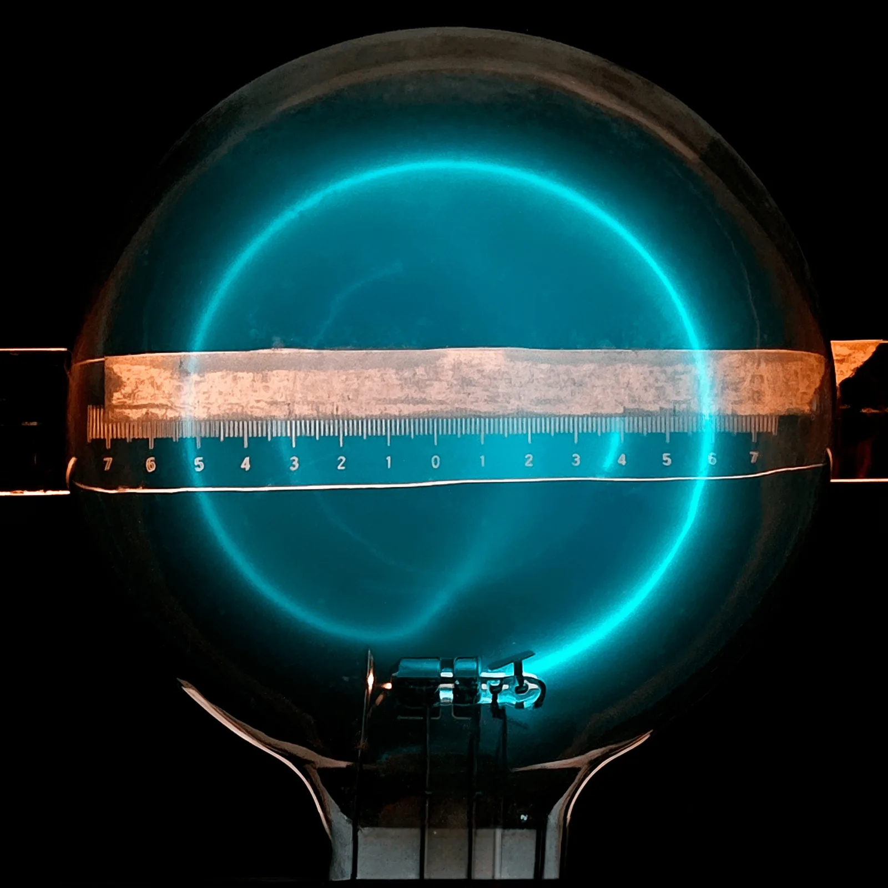
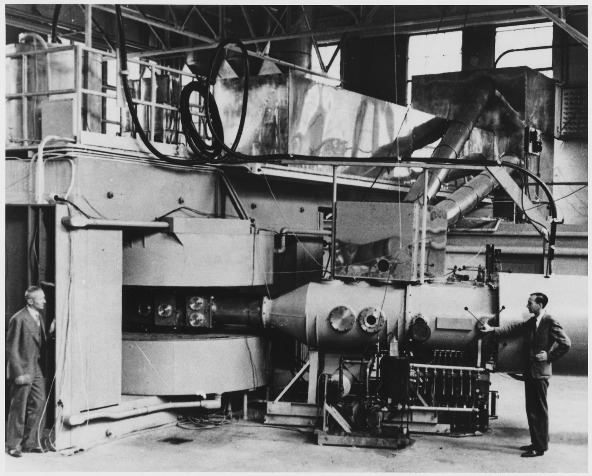

Varatun hiukkasen liike sähkö- ja magneettikentässä
Miksi laboratorio pystyy erottamaan muinaisen puunpalan hiili-14-atomit tavallisista hiiliatomeista? Atomit käyttäytyvät kemiallisesti samoin, ja hiili-14-atomeja on vain noin yksi biljoonasta.
Pohjatiedot
- Sähkökentässä varattuun hiukkaseen vaikuttaa voima $F = qE$. Kun hiukkanen kulkee jännitteen $U$ yli, se saa energiaa $W = qU$luku Homogeeninen sähkökenttä, potentiaali ja potentiaalienergia
- Magneettikentän voimakkuutta kuvaa magneettivuon tiheys $B$. Sen yksikkö on teslaluku Magneetit, magneettinen dipoli ja magneettikenttä
- Tasaisessa ympyräliikkeessä kokonaisvoima osoittaa kohti radan keskipistettä. Sen suuruus on $\tfrac{mv^2}{r}$luku Tasainen ympyräliike ja normaalikiihtyvyys
Ydinpolku: tee vaiheet järjestyksessä. Valinnainen-tehtävät ovat lisäharjoittelua. Valinnaisia tehtäviä on 3.
Luvun tärkeät käsitteet Vapaaehtoinen
Tutustu luvun tärkeisiin käsitteisiin. Voit kirjoittaa niiden merkitykset sinulle vahvimmalla kielellä tai useammalla kielellä.
- Magneettinen voima
- Voima, jonka magneettikenttä kohdistaa liikkuvaan varattuun hiukkaseen. Se on aina kohtisuorassa nopeutta vastaan.
- Ympyrärata
- Rata, jolla hiukkanen kiertää, kun magneettinen voima osoittaa koko ajan kohti radan keskipistettä.
- Nopeusvalitsin
- Laite, jonka läpi pääsevät suoraan vain ne hiukkaset, joiden nopeus on tietty.
- Massaspektrometri
- Laite, joka erottelee hiukkaset massan mukaan. Kun vauhti ja varaus ovat samat, raskaamman hiukkasen rata kaartuu loivemmin.
Pohdinta
Radiohiiliajoituksella selvitetään muinaisen puunpalan ikä. Ikä selviää siitä, kuinka paljon näytteessä on vielä radioaktiivista hiili-14:ää. Näytteen hiilestä vain noin yksi biljoonasta atomista on hiili-14:ää. Kemiallisesti hiili-14 käyttäytyy kuin tavallinen hiili-12.
Laboratoriossa näytteen hiiliatomeista tehdään ioneja. Ioni on atomi, jolla on sähkövaraus. Ionit kiihdytetään suureen vauhtiin ja ohjataan magneettikenttään. Ilmaisimella hiili-12-ionit ja hiili-14-ionit osuvat eri kohtiin. Siksi ne voidaan laskea erikseen.
Miten magneettikenttä voi lajitella hiukkasia, jotka eroavat toisistaan vain massaltaan?
Valinnainen Kertaa: sähkökenttä kiihdyttää
Ennusta
Tee ennusteet ennen tutkimista 3 kysymystä
Ennuste 1: vauhti magneettikentässä
Ennuste 2: kaksinkertainen vauhti
Ennuste 3: nopeusvalitsin
Tutki
Valitse hiukkanen ja kentät ja paina Laukaise. Seuraa, miten rata kaartuu, mihin hiukkanen osuu ja mitä sen vauhdille tapahtuu.
Simulaatio
Käyttöohje
Hiukkanen tulee kammioon vasemman seinän raosta ja liikkuu aluksi oikealle. Valitse hiukkanen, sen vauhti $v$, magneettikentän $B$ suuruus ja suunta sekä levyjen välisen sähkökentän $E$ voimakkuus. Paina sitten Laukaise.
Sininen nuoli on nopeus. Punaiset nuolet ovat magneettinen voima $\overline{F}_\text{m}$ ja sähköinen voima $\overline{F}_\text{s}$. Pidempi voimanuoli on aina yhtä pitkä, ja lyhyempi on piirretty samassa suhteessa. Vasen seinä on ilmaisin. Lukema $d$ on osumakohdan etäisyys raosta. Jos hiukkanen tulee ulos oikeasta reunasta, lukemissa näkyy sen poikkeama $y$ raon korkeudesta. Ruudukon ruudun sivu on $5\,\text{cm}$. Kun muutat jotakin arvoa, hiukkanen palaa raolle. Kohta Nopeus muuttaa vain animaation tahtia.
Mallin oletukset
Kammio on tyhjiö, ja kentät ovat homogeenisia koko kammiossa. Magneettikenttä on kohtisuorassa paperia vastaan. Sähkökenttä osoittaa alalevystä ($+$) ylälevyyn ($-$). Hiukkasten massat ja varaukset ovat todellisia: protoni $1{,}673 \cdot 10^{-27}\,\text{kg}$ ja $+e$, deuteroni $3{,}344 \cdot 10^{-27}\,\text{kg}$ ja $+e$, alfahiukkanen $6{,}645 \cdot 10^{-27}\,\text{kg}$ ja $+2e$ sekä negatiivinen vetyioni $1{,}674 \cdot 10^{-27}\,\text{kg}$ ja $-e$.
Painovoima jätetään pois, koska se on noin $10^{12}$ kertaa pienempi kuin magneettinen voima. Vauhdit ovat alle $1\,\%$ valon nopeudesta, joten klassinen mekaniikka riittää. Liike näytetään hidastettuna. Normaalinopeudella yksi sekunti animaatiota vastaa aikaa $1{,}0 \cdot 10^{-7}\,\text{s}$. Lukemat ovat mallin arvoja, eivät mittauksia.
Laskennan selitys
Simulaatio laskee radan pienillä aika-askelilla Newtonin toisesta laista. Hiukkaseen vaikuttavat sähköinen voima $q\overline{E}$ ja magneettinen voima. Magneettisen voiman suuruus on $qvB$, ja sen suunta on kohtisuorassa sekä nopeutta että kenttää vastaan. Positiivisen varauksen voiman suunta saadaan oikean käden säännöllä. Osumakohta $d$, poikkeama $y$ ja vauhti saadaan lasketusta radasta. Niissä ei käytetä säteen kaavaa. Lukemien voimat $F_\text{m} = qvB$ ja $F_\text{s} = qE$ on laskettu lähtövauhdilla.
Koe 1: vain vauhti muuttuu
Testaa ennusteet 1 ja 2. Hiukkanen on protoni. Magneettikenttä on $0{,}20\,\text{T}$ ja osoittaa paperista ulos. Sähkökenttää ei ole. Muuta vain vauhtia. Paina Laukaise, seuraa rataa ja kirjaa osumakohta $d$ ja vauhti lopussa. Tee mittaus ainakin vauhdeilla $1{,}0 \cdot 10^{6}\,\text{m/s}$ ja $2{,}0 \cdot 10^{6}\,\text{m/s}$. Voit mitata myös muilla vauhdeilla. Taulukossa vauhti on yksikössä $\text{Mm/s}$, ja $1\,\text{Mm/s} = 10^{6}\,\text{m/s}$. Radan säde on puolet osumakohdan etäisyydestä.
Alkutila: hiukkanen: protoni, vauhti $v$ = $1\,\text{Mm/s}$, magneettikenttä $B$: $0{,}20\,\text{T}$, kentän suunta: paperista ulos, sähkökenttä $E$ = $0\,\text{kV/m}$. Vakiona: hiukkanen, magneettikenttä $B$, kentän suunta, sähkökenttä $E$. Muutetaan: vauhti $v$.
| vauhti $v$ | $d$ $(\text{cm})$ | $v$ lopussa $(\text{Mm/s})$ |
|---|
Koe 2: nopeusvalitsin
Testaa ennuste 3. Kammiossa on nyt sähkökenttä $150\,\text{kV/m}$ ja magneettikenttä $0{,}15\,\text{T}$ paperista ulos. Vauhti on $1{,}0 \cdot 10^{6}\,\text{m/s}$. Vaihda vain hiukkasta. Paina Laukaise ja kirjaa poikkeama ja voimat ainakin protonilla ja alfahiukkasella. Voimat ovat femtonewtoneina, ja $1\,\text{fN} = 10^{-15}\,\text{N}$.
Alkutila: hiukkanen: protoni, vauhti $v$ = $1\,\text{Mm/s}$, magneettikenttä $B$ = $0{,}15\,\text{T}$, kentän suunta: paperista ulos, sähkökenttä $E$ = $150\,\text{kV/m}$. Vakiona: vauhti $v$, magneettikenttä $B$, kentän suunta, sähkökenttä $E$. Muutetaan: hiukkanen.
| hiukkanen | $y$ $(\text{cm})$ | $F_m$ $(\text{fN})$ | $F_s$ $(\text{fN})$ |
|---|
Johtopäätös: mitä magneettikenttä tekee?
Kirjoita taulukoidesi perusteella vastaus näihin kysymyksiin.
Muuttiko magneettikenttä protonin vauhtia? Miten osumakohta ja radan säde riippuivat vauhdista? Miksi nopeusvalitsimen läpi kulkivat suoraan kaikki hiukkaset, vaikka niiden massat ja varaukset olivat erilaiset?
Mallivastaus
Vauhti oli lopussa sama kuin alussa, esimerkiksi $1{,}00 \cdot 10^{6}\,\text{m/s}$, vaikka protonin liike kääntyi vastakkaiseen suuntaan. Magneettinen voima on kohtisuorassa nopeutta vastaan, eikä se tee työtä.
Kun vauhti kaksinkertaistui $1{,}0 \cdot 10^{6}\,\text{m/s}$:sta $2{,}0 \cdot 10^{6}\,\text{m/s}$:iin, osumakohta siirtyi $10{,}4\,\text{cm}$:stä $20{,}9\,\text{cm}$:iin. Myös säde $r = d : 2$ kaksinkertaistui. Säde on siis suoraan verrannollinen vauhtiin.
Nopeusvalitsimessa poikkeama oli $0\,\text{cm}$ kaikilla hiukkasilla. Alfahiukkaseen vaikutti sekä sähköinen että magneettinen voima $48\,\text{fN}$. Se on kaksinkertainen protonin voimaan $24\,\text{fN}$ verrattuna. Voimat olivat silti yhtä suuret ja vastakkaiset, joten kokonaisvoima oli nolla. Ehdosta $qE = qvB$ varaus supistuu pois. Suoraan kulkee hiukkanen, jonka vauhti on $v = E : B = 1{,}0 \cdot 10^{6}\,\text{m/s}$. Luvut ovat mallin arvoja.
Arvioi oma vastauksesi
Merkitse kohdat, jotka sinun vastauksessasi jo on.
Kertaa asia teoriatiivistelmästä ja harjoittele tehtävillä.
Teoriatiivistelmä
Ydinajatus
Sähkökenttä kiihdyttää
Luvussa Homogeeninen sähkökenttä, potentiaali ja potentiaalienergia opittiin, että sähkökentässä varattuun hiukkaseen vaikuttaa sähköinen voima $F_\text{s} = qE$. Positiivisessa hiukkasessa voima osoittaa kentän $\overline{E}$ suuntaan. Negatiivisessa hiukkasessa voima osoittaa vastakkaiseen suuntaan. Kun hiukkanen kulkee jännitteen $U$ yli, kenttä tekee siihen työn $W = qU$. Työ kasvattaa hiukkasen liike-energiaa. Levosta lähtevälle hiukkaselle pätee siis
$$\begin{aligned} F_\text{s} &= qE \\ qU &= \tfrac{1}{2} m v^2 \end{aligned}$$
missä $q$ on hiukkasen varaus (C), $E$ on sähkökentän voimakkuus (V/m), $U$ on jännite (V), $m$ on massa (kg) ja $v$ on vauhti (m/s). Sähkökentällä saadaan siis varattu hiukkanen liikkeelle ja sen vauhti kasvamaan.
Magneettikenttä kääntää liikkuvaa varausta
Magneettikenttä $\overline{B}$ (luku Magneetit, magneettinen dipoli ja magneettikenttä) ei vaikuta varaukseen, joka on levossa. Liikkuvaan varattuun hiukkaseen se vaikuttaa magneettisella voimalla. Tämä voima on kohtisuorassa sekä hiukkasen nopeutta $\overline{v}$ että kenttää $\overline{B}$ vastaan. Kohtisuorassa tarkoittaa suoraa kulmaa, kuten seinän ja lattian välillä.
Voiman suunnan positiiviselle varaukselle antaa oikean käden sääntö. Ojenna oikea käsi niin, että peukalo osoittaa nopeuden suuntaan ja muut sormet osoittavat kentän suuntaan. Kämmen työntää silloin voiman suuntaan. Negatiiviseen varaukseen voima vaikuttaa vastakkaiseen suuntaan. Kun hiukkanen liikkuu kentän suuntaisesti, voima on nolla.
Voima ei muuta vauhtia: rata on ympyrä
Magneettinen voima on joka hetki kohtisuorassa nopeutta vastaan. Siksi se ei tee työtä. Hiukkasen liike-energia ja vauhti pysyvät samoina. Vain liikkeen suunta muuttuu.
Oletetaan, että hiukkanen liikkuu kohtisuorassa homogeenista kenttää vastaan. Homogeeninen kenttä on joka paikassa yhtä voimakas ja samansuuntainen. Silloin voima on koko ajan yhtä suuri ja osoittaa kohti samaa pistettä. Hiukkanen on tasaisessa ympyräliikkeessä, ja magneettinen voima on sen keskeisvoima eli voima, joka osoittaa kohti ympyrän keskipistettä (luku Tasainen ympyräliike ja normaalikiihtyvyys).
Esimerkki: protoni lentää vauhdilla $1{,}0 \cdot 10^{6}\,\text{m/s}$ kohtisuoraan $0{,}20\,\text{T}$:n kenttää vastaan. Siihen vaikuttaa voima $3{,}2 \cdot 10^{-14}\,\text{N}$. Protoni kiertää ympyrää, jonka säde on noin $5{,}2\,\text{cm}$. Protonin paino on $1{,}6 \cdot 10^{-26}\,\text{N}$. Se on noin $10^{12}$ kertaa pienempi kuin magneettinen voima. Siksi painovoima jätetään hiukkasten liikkeessä huomiotta.

Magneettinen voima ja ympyrärata
Magneettikentässä liikkuvaan varattuun hiukkaseen vaikuttavan magneettisen voiman suuruus lasketaan kaavalla
$$F_\text{m} = q v B \sin\alpha$$
missä $q$ on hiukkasen varauksen suuruus (C), $v$ on hiukkasen vauhti (m/s), $B$ on magneettivuon tiheys eli magneettikentän voimakkuus (T) ja $\alpha$ on nopeuden ja kentän välinen kulma. Kun nopeus on kohtisuorassa kenttää vastaan, $\sin 90^\circ = 1$ ja voima on suurin: $F_\text{m} = qvB$. Kentän suuntaisesti liikkuvaan hiukkaseen ei vaikuta voimaa, koska $\sin 0^\circ = 0$. Teslan määritelmästä seuraa, että $1\,\text{C} \cdot 1\,\tfrac{\text{m}}{\text{s}} \cdot 1\,\text{T} = 1\,\text{N}$.
Oletetaan, että hiukkanen liikkuu kohtisuorassa homogeenista magneettikenttää vastaan. Silloin magneettinen voima on ympyräliikkeen keskeisvoima. Newtonin toisen lain mukaan $qvB = \tfrac{mv^2}{r}$. Ratkaistaan tästä radan säde:
$$\begin{aligned} q v B &= \frac{m v^2}{r} \\ r &= \frac{m v}{q B} \end{aligned}$$
missä $r$ on ympyräradan säde (m) ja $m$ on hiukkasen massa (kg). Säde on suoraan verrannollinen hiukkasen massaan ja vauhtiin. Säde on kääntäen verrannollinen varaukseen ja kenttään. Raskas tai nopea hiukkanen kaartuu loivasti. Voimakas kenttä taivuttaa radan tiukalle. Kaava pätee, kun vauhti on pieni valon nopeuteen verrattuna.
Alla oleva kuvaaja näyttää säteen $r$. Simulaation ilmaisimella osumakohdan etäisyys raosta on halkaisija $d = 2r$.
Nopeusvalitsin ja massaspektrometri
Nopeusvalitsin
Nopeusvalitsin on laite, joka päästää läpi vain tietyllä vauhdilla kulkevat hiukkaset. Siinä hiukkaset kulkevat kahden levyn välistä. Levyjen välissä on sekä sähkökenttä että sitä vastaan kohtisuora magneettikenttä. Kentät on suunnattu niin, että sähköinen voima $qE$ ja magneettinen voima $qvB$ ovat vastakkaissuuntaiset. Suoraan valitsimen läpi kulkee vain hiukkanen, johon voimat vaikuttavat yhtä suurina:
$$\begin{aligned} qE &= qvB \\ v &= \frac{E}{B} \end{aligned}$$
missä $E$ on levyjen välisen sähkökentän voimakkuus (V/m) ja $B$ on magneettivuon tiheys (T). Varaus supistuu yhtälöstä pois. Siksi valitsin päästää suoraan läpi kaikki hiukkaset, joiden vauhti on $E : B$. Hiukkasen massalla, varauksella ja varauksen merkillä ei ole väliä.
Nopeampaan hiukkaseen vaikuttaa suurempi magneettinen voima, ja se kaartuu magneettisen voiman suuntaan. Hitaampi hiukkanen kaartuu sähköisen voiman suuntaan.
Massaspektrometri
Massaspektrometri on laite, joka mittaa ionien massoja. Ioni on varattu atomi tai molekyyli. Nopeusvalitsimesta tulevien ionien vauhti tunnetaan. Ionit ohjataan raon kautta toiseen magneettikenttään $B_2$. Siellä ne kulkevat puoliympyrän ja osuvat ilmaisimeen, joka on raon vieressä. Osumakohdan etäisyys raosta on radan halkaisija $2r$. Säteen kaavasta ratkaistaan ionin massa:
$$m = \frac{q B_2 r}{v}$$
Samalla vauhdilla ja varauksella radan säde on suoraan verrannollinen massaan. Raskaammat ionit osuvat siis kauemmas. Näin voidaan erottaa saman alkuaineen isotoopit. Isotoopit ovat saman alkuaineen atomeja, jotka eroavat toisistaan vain massaltaan. Radiohiiliajoituksessa hiili-14-ionit erotetaan hiili-12-ioneista ja lasketaan erikseen. Massaspektrometrillä tunnistetaan myös esimerkiksi dopingaineita ja ympäristömyrkkyjä.
Hiukkaskiihdytin
Hiukkaskiihdytin on laite, joka antaa hiukkasille hyvin suuren vauhdin. Siinä tarvitaan molempia kenttiä. Magneettinen voima ei tee työtä, joten vain sähkökenttä voi kasvattaa hiukkasen energiaa. Aina kun hiukkanen kulkee kiihdytysvälin jännitteen $U$ yli, sen liike-energia kasvaa $qU$:n verran. Magneetit taas taivuttavat ja kohdistavat hiukkassuihkua.

Rengaskiihdyttimessä sama hiukkanen kulkee saman kiihdytysvälin läpi yhä uudelleen. Kun vauhti kasvaa, magneettikenttää vahvistetaan. Silloin radan säde $r = mv : (qB)$ pysyy samana ja hiukkaset pysyvät renkaassa.
Euroopan hiukkasfysiikan tutkimuskeskus CERN on rakentanut LHC-kiihdyttimen. Sen rengas on $26{,}7\,\text{km}$ pitkä. Renkaassa on $1232$ suprajohtavaa taivutusmagneettia. Ne tuottavat enimmillään noin $8{,}3\,\text{T}$:n kentän. Protonien energia on vuodesta 2022 ollut $6{,}8\,\text{TeV}$. Se on noin $1{,}1 \cdot 10^{-6}\,\text{J}$ yhtä protonia kohti (CERN 2017, LHC the guide; CERN 2022).
Protonit kulkevat lähes valon nopeudella. Siksi kaava $r = mv : (qB)$ ei päde niille sellaisenaan. Periaate on silti sama: mitä suurempi energia, sitä voimakkaampi kenttä tai sitä suurempi rengas tarvitaan.
Yleinen virhekäsitys
Moni ajattelee, että magneettikenttä vetää varattua hiukkasta kentän suuntaan tai napaa kohti, kuten magneetti vetää rautanaulaa. Moni ajattelee myös, että kenttä kiihdyttää hiukkasta. Näin ei ole. Magneettinen voima on aina kohtisuorassa sekä nopeutta että kenttää vastaan. Siksi se ei tee työtä eikä muuta hiukkasen vauhtia. Se vain kääntää liikkeen suuntaa. Hiukkasen vauhtia voi kasvattaa vain sähkökenttä. Siksi kiihdyttimissä on sekä sähkökenttiä että magneetteja.
Toinen virhe on unohtaa varauksen merkki. Oikean käden sääntö antaa voiman suunnan positiiviselle varaukselle. Negatiiviseen varaukseen voima vaikuttaa vastakkaiseen suuntaan. Elektroni lentää samalla vauhdilla samaan kenttään kuin protoni. Se kaartuu vastakkaiseen suuntaan. Sen radan säde on noin $1840$ kertaa pienempi, koska sen massa on niin paljon pienempi.
Tiivistelmä
- Sähkökenttä kiihdyttää varattua hiukkasta. Voima on $F_\text{s} = qE$. Kun hiukkanen kulkee jännitteen $U$ yli, se saa liike-energiaa $qU$.
- Magneettinen voima $F_\text{m} = qvB \sin\alpha$ vaikuttaa vain liikkuvaan varaukseen. Se on kohtisuorassa sekä nopeutta että kenttää vastaan. Positiivisen varauksen voiman suunta saadaan oikean käden säännöllä. Negatiivisella varauksella suunta on vastakkainen.
- Magneettinen voima ei muuta vauhtia. Hiukkanen, joka liikkuu kohtisuorassa homogeenista kenttää vastaan, kiertää ympyrää. Ympyrän säde on $r = mv : (qB)$.
- Nopeusvalitsimesta pääsee suoraan läpi vain vauhti $v = E : B$. Massaspektrometri erottaa ionit massan mukaan, koska säde on verrannollinen massaan.
- Hiukkaskiihdyttimessä sähkökentät kasvattavat hiukkasten energiaa. Magneetit ohjaavat hiukkasten rataa.
Valinnainen Palaa ennusteisiisi
Vertaa ennusteitasi kokeiden mallin arvoihin ja yhtälöön $r = mv : (qB)$. Palaa sitten alun kysymykseen. Miksi hiili-14-ionit osuvat ilmaisimeen eri kohtaan kuin hiili-12-ionit? Niillä on sama varaus, ja ne tulevat magneettikenttään samalla vauhdilla nopeusvalitsimen jälkeen.
Haluaisitko muuttaa ennustettasi?
Sovella
Esimerkki
Tehtävä
Massaspektrometrin nopeusvalitsimessa sähkökentän voimakkuus on $6{,}00 \cdot 10^{4}\,\text{V/m}$ ja magneettivuon tiheys on $0{,}200\,\text{T}$. Neonionit kulkevat valitsimen läpi suoraan. Niiden varaus on $q = e = 1{,}602 \cdot 10^{-19}\,\text{C}$. Ionit tulevat raon kautta magneettikenttään, jonka magneettivuon tiheys on $0{,}500\,\text{T}$. Ne kaartuvat puoliympyrän ja osuvat ilmaisimeen $24{,}9\,\text{cm}$:n päähän raosta. Mikä on ionin massa kilogrammoina ja atomimassayksikköinä ($1\,\text{u} = 1{,}661 \cdot 10^{-27}\,\text{kg}$)?
Vaihe 1/7
Tunnetut ja kysytty. Tunnetaan nämä: valitsimessa $E = 6{,}00 \cdot 10^{4}\,\text{V/m}$ ja $B_1 = 0{,}200\,\text{T}$, taivutuskentässä $B_2 = 0{,}500\,\text{T}$, osumakohdan etäisyys raosta $d = 24{,}9\,\text{cm}$ ja ionin varaus $q = 1{,}602 \cdot 10^{-19}\,\text{C}$. Kysytään ionin massaa $m$.
Vaihe 2/7
Periaate. Valitsimen läpi suoraan kulkeneisiin ioneihin sähköinen ja magneettinen voima vaikuttivat yhtä suurina. Siksi niiden vauhti on $v = E : B_1$. Taivutuskentässä magneettinen voima on kohtisuorassa nopeutta vastaan ja toimii keskeisvoimana. Siksi ioni kulkee puoliympyrän. Osumakohdan etäisyys raosta on radan halkaisija, $d = 2r$.
Vaihe 3/7
Kaava ratkaistuna. Valitsimen ehdosta ratkaistaan vauhti. Keskeisvoiman yhtälöstä ratkaistaan massa:
$$\begin{aligned} &qE = qvB_1 \;\Rightarrow\; v = \frac{E}{B_1} \\[6pt] &qvB_2 = \frac{m v^2}{r} \\ &m = \frac{q B_2 r}{v}, \quad r = \frac{d}{2} \end{aligned}$$
Vaihe 4/7
Yksikkömuunnokset. Säde on puolet etäisyydestä:
Muut suureet ovat jo SI-yksiköissä. Lisäksi $\tfrac{\text{V/m}}{\text{T}} = \tfrac{\text{m}}{\text{s}}$.
Vaihe 5/7
Sijoitus. Lasketaan ensin vauhti ja sen jälkeen massa:
$$\begin{aligned} v &= \frac{E}{B_1} \\ &= \frac{6{,}00 \cdot 10^{4}\,\text{V/m}}{0{,}200\,\text{T}} \\ &= 3{,}00 \cdot 10^{5}\,\text{m/s} \\[6pt] m &= \frac{q B_2 r}{v} \\ &= 1{,}602 \cdot 10^{-19}\,\text{C} \cdot 0{,}500\,\text{T} \\ &\quad \cdot \frac{0{,}1245\,\text{m}}{3{,}00 \cdot 10^{5}\,\text{m/s}} \\ &= 3{,}324 \cdot 10^{-26}\,\text{kg} \end{aligned}$$
Atomimassayksiköissä
Vaihe 6/7
Tulos. Ionin massa on $3{,}32 \cdot 10^{-26}\,\text{kg}$ eli $20{,}0\,\text{u}$. Tulos annetaan kolmella merkitsevällä numerolla, koska etäisyydessä $24{,}9\,\text{cm}$ ja kentissä on kolme merkitsevää numeroa.
Vaihe 7/7
Järkevyys. Neon-20-atomin massa on taulukon mukaan $19{,}99\,\text{u}$. Ionit ovat siis neon-20:tä. Protoniin verrattuna ioni on noin $20$ kertaa raskaampi, kuten pitääkin.
Neonissa on myös isotooppi neon-22. Sen ionit osuisivat $27{,}4\,\text{cm}$:n päähän eli noin $2{,}5\,\text{cm}$ kauemmas, sillä samalla vauhdilla säde kasvaa massan mukana. Vauhti $3{,}00 \cdot 10^{5}\,\text{m/s}$ on noin $0{,}1\,\%$ valon nopeudesta. Siksi kaava $r = mv : (qB)$ pätee hyvin.
Etsi virhe
Sovella uuteen tilanteeseen
Puolijohdetehtaan ioni-istutin ampuu boori-ioneja piikiekkoon. Ionien massa on $11{,}01\,\text{u}$ ($1\,\text{u} = 1{,}661 \cdot 10^{-27}\,\text{kg}$) ja varaus $e = 1{,}602 \cdot 10^{-19}\,\text{C}$. Ionit kiihdytetään levosta jännitteellä $20{,}0\,\text{kV}$. Sen jälkeen ne ohjataan erottelumagneettiin. Siellä niiden on kuljettava ympyränkaarta, jonka säde on $0{,}300\,\text{m}$, jotta ne pääsevät raon läpi.
Kuinka suuri magneettivuon tiheyden on oltava? Vastaa teslaina.
Vihje 1: ohjaava kysymys
Tilanteessa on kaksi vaihetta. Mitä sähkökenttä tekee kiihdytyksessä? Mikä voima pitää ionin ympyräradalla magneetissa?
Vihje 2: mikä yhteys
Kiihdytyksestä saadaan $qU = \tfrac{1}{2}mv^2$, josta $v = \sqrt{2qU : m}$. Magneetissa $qvB = mv^2 : r$, josta $B = mv : (qr)$.
Vihje 3: välivaihe
Massa on
Vauhti on $v = 5{,}92 \cdot 10^{5}\,\text{m/s}$.
Näytä ratkaisu
Annettu
boori-ioni, massa $m = 11{,}01\,\text{u}$, $1\,\text{u} = 1{,}661 \cdot 10^{-27}\,\text{kg}$, varaus $q = e = 1{,}602 \cdot 10^{-19}\,\text{C}$; kiihdytysjännite $U = 20{,}0\,\text{kV}$, ionit lähtevät levosta; radan säde magneetissa $r = 0{,}300\,\text{m}$
Kysytty
erottelumagneetin magneettivuon tiheys $B$ teslaina
Periaate
Kiihdytyksessä sähkökentän tekemä työ $qU$ muuttuu kokonaan ionin liike-energiaksi, koska ioni lähtee levosta tyhjiössä. Magneetissa ionin nopeus on kohtisuorassa kenttää vastaan. Magneettinen voima $qvB$ on siis ympyräradan keskeisvoima, eikä se muuta vauhtia.
Kaava
$qU = \tfrac{1}{2}mv^2$, josta $v = \sqrt{\dfrac{2qU}{m}}$; $qvB = \dfrac{mv^2}{r}$, josta $B = \dfrac{mv}{qr}$
Muunnokset
Sijoitus
Vastaus
$0{,}225\,\text{T}$
Kolme merkitsevää numeroa kuten jännitteessä $20{,}0\,\text{kV}$ ja säteessä $0{,}300\,\text{m}$.
Järkevyys
Kenttä on samaa suuruusluokkaa kuin vahvan kestomagneetin pinnalla. Sähkömagneetti tuottaa sellaisen helposti. Vauhti $5{,}9 \cdot 10^{5}\,\text{m/s}$ on noin $0{,}2\,\%$ valon nopeudesta, joten klassinen kaava pätee. Takaisin laskettuna $r = mv : (qB) = 0{,}300\,\text{m}$, kuten pitääkin.
Tarkista osaamisesi
Exit ticket
Vastaa ensin itse. Avaa vastaus vasta sitten.
- Nopeusvalitsimen levyjen välissä sähkökentän voimakkuus on $3{,}0 \cdot 10^{4}\,\text{V/m}$ ja magneettivuon tiheys on $0{,}10\,\text{T}$. Millä vauhdilla ionit kulkevat valitsimen läpi suoraan?
Vastaus
$v$$= \tfrac{E}{B}$$= \tfrac{3{,}0 \cdot 10^{4}\,\text{V/m}}{0{,}10\,\text{T}}$$= 3{,}0 \cdot 10^{5}\,\text{m/s}$olipa ionin massa tai varaus mikä tahansa.
- Protoni ja elektroni lentävät samalla vauhdilla kohtisuoraan samaan magneettikenttään. Miten niiden radat eroavat toisistaan?
Vastaus
Radat kaartuvat vastakkaisiin suuntiin, koska varaukset ovat vastakkaismerkkiset. Varausten suuruus on sama, joten säde $r = mv : (qB)$ on verrannollinen massaan. Elektronin radan säde on noin $1840$ kertaa pienempi kuin protonin.
1. Käsite
2. Voiman suunta
3. Radan säde
Alfahiukkasen massa on $6{,}645 \cdot 10^{-27}\,\text{kg}$ ja varaus $2e = 3{,}204 \cdot 10^{-19}\,\text{C}$. Se lentää vauhdilla $1{,}5 \cdot 10^{6}\,\text{m/s}$ kohtisuoraan magneettikenttään, jonka magneettivuon tiheys on $0{,}50\,\text{T}$. Kuinka suuri on hiukkasen ympyräradan säde? Vastaa senttimetreinä.
Vihje 1: ohjaava kysymys
Mikä voima pitää hiukkasen ympyräradalla, ja mihin suuntaan se osoittaa?
Vihje 2: mikä yhteys
Magneettinen voima on keskeisvoima: $qvB = mv^2 : r$, josta $r = mv : (qB)$.
Vihje 3: välivaihe
Muista, että alfahiukkasen varaus on $2e$:
Näytä ratkaisu
Annettu
alfahiukkanen, $m = 6{,}645 \cdot 10^{-27}\,\text{kg}$, $q = 2e = 3{,}204 \cdot 10^{-19}\,\text{C}$, $v = 1{,}5 \cdot 10^{6}\,\text{m/s}$ kohtisuorassa kenttää vastaan, $B = 0{,}50\,\text{T}$
Kysytty
ympyräradan säde $r$ senttimetreinä
Periaate
Magneettinen voima $qvB$ on kohtisuorassa nopeutta vastaan ja koko ajan yhtä suuri. Siksi hiukkanen on tasaisessa ympyräliikkeessä, ja magneettinen voima on sen keskeisvoima.
Kaava
$qvB = \dfrac{mv^2}{r}$, josta $r = \dfrac{mv}{qB}$
Muunnokset
Kaikki suureet ovat SI-yksiköissä, joten säde saadaan metreinä. Lopuksi $1\,\text{m} = 100\,\text{cm}$.
Sijoitus
Vastaus
$6{,}2\,\text{cm}$
Kaksi merkitsevää numeroa kuten vauhdissa $1{,}5 \cdot 10^{6}\,\text{m/s}$ ja kentässä $0{,}50\,\text{T}$.
Järkevyys
Protoni kiertäisi samalla vauhdilla samassa kentässä säteellä $3{,}1\,\text{cm}$. Alfahiukkasen massa on noin nelinkertainen mutta varaus kaksinkertainen. Säteen $r = mv : (qB)$ pitää siis olla noin kaksinkertainen, ja se on.
Ehdotus: yksi vastaus ei kerro kaikkea osaamisestasi. Kertaa asia teoriatiivistelmästä ja tee ydintehtävät.
Valinnainen 4. Selitä: hiukkaskiihdytin
CERNin LHC-kiihdyttimessä protonit kiertävät $26{,}7\,\text{km}$:n pituista rengasta. Selitä, miksi protonien energiaa kasvatetaan sähkökentillä eikä magneeteilla. Selitä myös, miksi suuremman energian kiihdytin tarvitsee voimakkaammat magneetit tai suuremman renkaan.
Mallivastaus
Magneettinen voima on aina kohtisuorassa protonin nopeutta vastaan. Siksi se ei tee työtä eikä voi kasvattaa protonin liike-energiaa. Energiaa kasvattaa sähkökenttä. Aina kun protoni kulkee kiihdytysvälin jännitteen $U$ yli, kenttä tekee siihen työn $qU$.
Magneettien tehtävä on taivuttaa protonien rata renkaaksi. Radan säde on $r = mv : (qB)$, joten nopeampi protoni kaartuu loivemmin. Jotta se pysyisi samassa renkaassa, kenttää $B$ on vahvistettava. Kun magneettien kenttää ei voi enää kasvattaa, suurempi energia vaatii suuremman säteen eli suuremman renkaan. Lähellä valon nopeutta kaava muuttuu suhteellisuusteorian mukaiseksi, mutta periaate on sama.
Arvioi oma vastauksesi
Merkitse kohdat, jotka sinun vastauksessasi jo on.
Kertaa asia teoriatiivistelmästä ja harjoittele tehtävillä.
Tehtävät
Taso 1 · perusharjoitus 8 tehtävää
Yksi kaava tai yksi päättelyaskel. Tee ensin ydintehtävät. Loput ovat lisäharjoitusta.
- Tehtävä 2-1Ydintehtävä
Tyhjiöputkessa kulkee protonisuihku. Protonien vauhti on $3{,}0 \cdot 10^{5}\,\text{m/s}$. Putken ympärillä olevat kelat tuottavat magneettikentän, jonka magneettivuon tiheys on $0{,}25\,\text{T}$. Kenttä on kohtisuorassa protonien nopeutta vastaan. Protonin varaus on $1{,}602 \cdot 10^{-19}\,\text{C}$.
Kuinka suuri magneettinen voima vaikuttaa yhteen protoniin? Anna vastaus muodossa $\ldots \cdot 10^{-14}\,\text{N}$.
Vastaus
$1{,}2 \cdot 10^{-14}\,\text{N}$
Näytä ratkaisu
Annettu
protoni, $q = 1{,}602 \cdot 10^{-19}\,\text{C}$, $v = 3{,}0 \cdot 10^{5}\,\text{m/s}$, $B = 0{,}25\,\text{T}$, nopeus kohtisuorassa kenttää vastaan
Kysytty
protoniin vaikuttava magneettinen voima $F_\text{m}$ muodossa $\ldots \cdot 10^{-14}\,\text{N}$
Periaate
Magneettikentässä liikkuvaan varattuun hiukkaseen vaikuttaa magneettinen voima. Nopeus on kohtisuorassa kenttää vastaan. Silloin $\sin 90^\circ = 1$ ja voima on suurimmillaan.
Kaava
$F_\text{m} = qvB \sin\alpha$, kun $\alpha = 90^\circ$: $F_\text{m} = qvB$
Muunnokset
Ei tarvita, koska kaikki suureet ovat SI-yksiköissä. Lisäksi
$1\,\text{C} \cdot 1\,\tfrac{\text{m}}{\text{s}} \cdot 1\,\text{T}$$= 1\,\text{N}$Sijoitus
$F_\text{m}$$= 1{,}602 \cdot 10^{-19}\,\text{C} \cdot 3{,}0 \cdot 10^{5}\,\tfrac{\text{m}}{\text{s}} \cdot 0{,}25\,\text{T}$$= 1{,}2015 \cdot 10^{-14}\,\text{N}$Vastaus
$1{,}2 \cdot 10^{-14}\,\text{N}$
Kaksi merkitsevää numeroa kuten vauhdissa $3{,}0 \cdot 10^{5}\,\text{m/s}$ ja kentässä $0{,}25\,\text{T}$.
Järkevyys
Voima on hyvin pieni. Protonin massa on kuitenkin vain $1{,}7 \cdot 10^{-27}\,\text{kg}$, joten kiihtyvyys on noin $10^{13}\,\text{m/s}^2$. Suihku kaartuu siis selvästi jo muutaman senttimetrin matkalla. Pyöristetyillä luvuilla
$1{,}6 \cdot 10^{-19}\,\text{C} \cdot 3 \cdot 10^{5}\,\text{m/s} \cdot 0{,}25\,\text{T}$$\approx 1{,}2 \cdot 10^{-14}\,\text{N}$sama tulos.
- Tehtävä 2-2Ydintehtävä
Koulun elektronisuihkuputkessa elektronit lentävät vauhdilla $2{,}0 \cdot 10^{6}\,\text{m/s}$ kohtisuoraan magneettikenttää vastaan. Elektronin massa on $9{,}109 \cdot 10^{-31}\,\text{kg}$ ja varaus $1{,}602 \cdot 10^{-19}\,\text{C}$. Magneettivuon tiheys on $1{,}5\,\text{mT}$. Kuinka suuri on elektronien ympyräradan säde? Anna vastaus millimetreinä.
Vastaus
$7{,}6\,\text{mm}$
Näytä ratkaisu
Annettu
elektroni, $m = 9{,}109 \cdot 10^{-31}\,\text{kg}$, $q = 1{,}602 \cdot 10^{-19}\,\text{C}$, $v = 2{,}0 \cdot 10^{6}\,\text{m/s}$ kohtisuorassa kenttää vastaan, $B = 1{,}5\,\text{mT}$
Kysytty
ympyräradan säde $r$ millimetreinä
Periaate
Magneettinen voima on kohtisuorassa nopeutta vastaan ja koko ajan yhtä suuri. Siksi elektroni on tasaisessa ympyräliikkeessä, ja magneettinen voima on sen keskeisvoima.
Kaava
$qvB = \dfrac{mv^2}{r}$, josta $r = \dfrac{mv}{qB}$
Muunnokset
$B$$= 1{,}5\,\text{mT}$$= 1{,}5 \cdot 0{,}001\,\text{T}$$= 1{,}5 \cdot 10^{-3}\,\text{T}$lopuksi $1\,\text{m} = 1000\,\text{mm}$.
Sijoitus
$r$$= \dfrac{9{,}109 \cdot 10^{-31}\,\text{kg} \cdot 2{,}0 \cdot 10^{6}\,\text{m/s}}{1{,}602 \cdot 10^{-19}\,\text{C} \cdot 1{,}5 \cdot 10^{-3}\,\text{T}}$$= 7{,}581 \cdot 10^{-3}\,\text{m}$$= 7{,}581\,\text{mm}$Vastaus
$7{,}6\,\text{mm}$
Kaksi merkitsevää numeroa kuten vauhdissa ja kentässä.
Järkevyys
Elektronin massa on hyvin pieni. Siksi jo heikko kenttä, joka mitataan millitesloissa, taivuttaa sen pienelle ympyrälle. Protoni kiertäisi samoilla arvoilla noin $1840$ kertaa suurempaa ympyrää, jonka säde olisi noin $14\,\text{m}$.
- Tehtävä 2-3
Nopeusvalitsimen levyjen välissä on sähkökenttä $4{,}0 \cdot 10^{4}\,\text{V/m}$. Siellä on myös magneettikenttä, joka on kohtisuorassa sähkökenttää vastaan. Sen magneettivuon tiheys on $0{,}080\,\text{T}$.
Millä vauhdilla ionit kulkevat valitsimen läpi suoraan? Anna vastaus kilometreinä sekunnissa.
Vastaus
$5{,}0 \cdot 10^{2}\,\text{km/s}$
Näytä ratkaisu
Annettu
$E = 4{,}0 \cdot 10^{4}\,\text{V/m}$, $B = 0{,}080\,\text{T}$, kentät kohtisuorassa toisiaan vastaan
Kysytty
vauhti $v$, jolla ionit kulkevat suoraan, kilometreinä sekunnissa
Periaate
Valitsimen läpi suoraan kulkevaan ioniin vaikuttavat sähköinen voima $qE$ ja magneettinen voima $qvB$. Ne ovat yhtä suuret ja vastakkaiset. Kokonaisvoima on siis nolla, eikä rata kaarru.
Kaava
$qE = qvB$, josta varaus supistuu ja $v = \dfrac{E}{B}$
Muunnokset
$\tfrac{\text{V/m}}{\text{T}} = \tfrac{\text{m}}{\text{s}}$; lopuksi $1\,\text{km/s} = 1000\,\text{m/s}$.
Sijoitus
$v$$= \dfrac{4{,}0 \cdot 10^{4}\,\text{V/m}}{0{,}080\,\text{T}}$$= 5{,}0 \cdot 10^{5}\,\text{m/s}$$= 500\,\text{km/s}$Vastaus
$5{,}0 \cdot 10^{2}\,\text{km/s}$
Eli $500\,\text{km/s}$, kaksi merkitsevää numeroa kuten kentissä.
Järkevyys
Tulos ei riipu ionin massasta eikä varauksesta. Vauhti on noin $0{,}2\,\%$ valon nopeudesta. Se on tavallinen ionisuihkun vauhti. Tarkistus:
$qvB$$= q \cdot 5{,}0 \cdot 10^{5} \cdot 0{,}080$$= q \cdot 4{,}0 \cdot 10^{4}$$= qE$ - Tehtävä 2-4
Alfahiukkasen varaus on $3{,}204 \cdot 10^{-19}\,\text{C}$. Hiukkanen kiihdytetään levosta jännitteellä $1{,}5\,\text{kV}$. Kuinka suuren liike-energian se saa? Anna vastaus muodossa $\ldots \cdot 10^{-16}\,\text{J}$.
Vastaus
$4{,}8 \cdot 10^{-16}\,\text{J}$
Näytä ratkaisu
Annettu
alfahiukkanen, $q = 3{,}204 \cdot 10^{-19}\,\text{C}$, kiihdytysjännite $U = 1{,}5\,\text{kV}$, lähtee levosta
Kysytty
liike-energia $E_\text{k}$ muodossa $\ldots \cdot 10^{-16}\,\text{J}$
Periaate
Sähkökenttä tekee hiukkaseen työn $W = qU$, kun hiukkanen kulkee jännitteen $U$ yli. Hiukkanen lähtee levosta tyhjiössä. Sen koko liike-energia tulee siis tästä työstä.
Kaava
$E_\text{k} = W = qU$
Muunnokset
$U$$= 1{,}5\,\text{kV}$$= 1{,}5 \cdot 1000\,\text{V}$$= 1500\,\text{V}$ja $1\,\text{C} \cdot 1\,\text{V} = 1\,\text{J}$.
Sijoitus
$E_\text{k}$$= 3{,}204 \cdot 10^{-19}\,\text{C} \cdot 1500\,\text{V}$$= 4{,}806 \cdot 10^{-16}\,\text{J}$Vastaus
$4{,}8 \cdot 10^{-16}\,\text{J}$
Kaksi merkitsevää numeroa kuten jännitteessä $1{,}5\,\text{kV}$.
Järkevyys
Alfahiukkasen varaus on kaksinkertainen protoniin verrattuna. Siksi se saa samasta jännitteestä kaksinkertaisen energian. Protonille tulisi
$1{,}602 \cdot 10^{-19}\,\text{C} \cdot 1500\,\text{V}$$= 2{,}4 \cdot 10^{-16}\,\text{J}$Energia ei riipu massasta.
- Tehtävä 2-5
Protoni lentää vauhdilla $5{,}0 \cdot 10^{6}\,\text{m/s}$ magneettikentässä, jonka magneettivuon tiheys on $0{,}40\,\text{T}$. Nopeuden ja kentän välinen kulma on $30^\circ$. Protonin varaus on $1{,}602 \cdot 10^{-19}\,\text{C}$.
Kuinka suuri magneettinen voima vaikuttaa protoniin? Anna vastaus muodossa $\ldots \cdot 10^{-13}\,\text{N}$.
Vastaus
$1{,}6 \cdot 10^{-13}\,\text{N}$
Näytä ratkaisu
Annettu
protoni, $q = 1{,}602 \cdot 10^{-19}\,\text{C}$, $v = 5{,}0 \cdot 10^{6}\,\text{m/s}$, $B = 0{,}40\,\text{T}$, nopeuden ja kentän välinen kulma $\alpha = 30^\circ$
Kysytty
magneettinen voima $F_\text{m}$ muodossa $\ldots \cdot 10^{-13}\,\text{N}$
Periaate
Magneettinen voima riippuu nopeuden ja kentän välisestä kulmasta. Voimaa aiheuttaa vain se nopeuden osa, joka on kohtisuorassa kenttää vastaan. Se on $v \sin\alpha$.
Kaava
$F_\text{m} = qvB \sin\alpha$
Muunnokset
Ei tarvita, koska suureet ovat SI-yksiköissä. Lisäksi $\sin 30^\circ = 0{,}5$.
Sijoitus
$F_\text{m}$$= 1{,}602 \cdot 10^{-19}\,\text{C} \cdot 5{,}0 \cdot 10^{6}\,\tfrac{\text{m}}{\text{s}} \cdot 0{,}40\,\text{T} \cdot 0{,}5$$= 1{,}602 \cdot 10^{-13}\,\text{N}$Vastaus
$1{,}6 \cdot 10^{-13}\,\text{N}$
Kaksi merkitsevää numeroa kuten vauhdissa ja kentässä.
Järkevyys
Kohtisuorassa kentässä voima olisi kaksinkertainen, $3{,}2 \cdot 10^{-13}\,\text{N}$. Kulma $30^\circ$ puolittaa sen, koska vain puolet nopeudesta on kohtisuorassa kenttää vastaan. Kentän suuntaisesti liikkuvaan protoniin voimaa ei olisi lainkaan.
- Tehtävä 2-6
Protoni lentää tyhjiössä kohtisuoraan tasaista magneettikenttää vastaan. Mitä protonin liike-energialle tapahtuu, kun se kulkee kentässä? (Liike-energia on liikkeessä olevan kappaleen energia.)
Vastaus
Liike-energia pysyy samana, koska magneettinen voima on kohtisuorassa nopeutta vastaan eikä tee työtä.
Näytä ratkaisu
Kysytty
mitä protonin liike-energialle tapahtuu, kun se kulkee magneettikentässä kohtisuoraan kenttää vastaan.
Periaate
Liike-energia muuttuu vain, jos hiukkaseen vaikuttava voima tekee työtä. Magneettinen voima $qvB$ on aina kohtisuorassa nopeutta vastaan. Siksi se ei tee työtä eikä muuta vauhtia. Se vain kääntää liikesuuntaa ja toimii ympyräradan keskeisvoimana. Vauhtia voi muuttaa vain sähkökenttä.
Mallivastaus
Liike-energia pysyy samana. Protoni kulkee ympyrärataa tasaisella vauhdilla, koska voima on koko ajan kohtisuorassa nopeutta vastaan eikä tee työtä. Kenttä ei kiihdytä eikä jarruta protonia. Voima ei myöskään ole kentän suuntainen, vaan kohtisuorassa sekä kenttää että nopeutta vastaan. Voimakas kenttä ei muuta tätä. Se taivuttaa radan vain pienemmäksi ympyräksi.
- Tehtävä 2-7
Elektronisuihkuputkessa elektronit lentävät vauhdilla $3{,}0 \cdot 10^{6}\,\text{m/s}$ kohtisuoraan tasaista magneettikenttää vastaan. Elektronin massa on $9{,}109 \cdot 10^{-31}\,\text{kg}$ ja varaus $1{,}602 \cdot 10^{-19}\,\text{C}$. Elektronien halutaan kiertävän ympyrärataa, jonka säde on $4{,}0\,\text{cm}$.
Kuinka suuri magneettivuon tiheys tarvitaan? Anna vastaus millitesloina.
Vastaus
$0{,}43\,\text{mT}$
Näytä ratkaisu
Annettu
elektroni, $m = 9{,}109 \cdot 10^{-31}\,\text{kg}$, $q = 1{,}602 \cdot 10^{-19}\,\text{C}$, $v = 3{,}0 \cdot 10^{6}\,\text{m/s}$ kohtisuorassa kenttää vastaan, ympyräradan säde $r = 4{,}0\,\text{cm}$
Kysytty
magneettivuon tiheys $B$ millitesloina
Periaate
Magneettinen voima on kohtisuorassa nopeutta vastaan ja koko ajan yhtä suuri. Siksi se on elektronin ympyräliikkeen keskeisvoima.
Kaava
$qvB = \dfrac{mv^2}{r}$, josta $B = \dfrac{mv}{qr}$
Muunnokset
$r$$= 4{,}0\,\text{cm}$$= 4{,}0 \cdot 0{,}01\,\text{m}$$= 0{,}040\,\text{m}$Lopuksi $1\,\text{T} = 1000\,\text{mT}$.
Sijoitus
$B$$= \dfrac{9{,}109 \cdot 10^{-31}\,\text{kg} \cdot 3{,}0 \cdot 10^{6}\,\text{m/s}}{1{,}602 \cdot 10^{-19}\,\text{C} \cdot 0{,}040\,\text{m}}$$= 4{,}264 \cdot 10^{-4}\,\text{T}$$= 0{,}4264\,\text{mT}$Vastaus
$0{,}43\,\text{mT}$
Kaksi merkitsevää numeroa kuten vauhdissa ja säteessä.
Järkevyys
Kenttä on noin 8,5-kertainen Maan magneettikenttään ($0{,}05\,\text{mT}$) verrattuna. Sen tuottaa helposti pieni käämi. Tarkistus laskemalla takaisin:
$r$$= \dfrac{mv}{qB}$$= \dfrac{9{,}109 \cdot 10^{-31}\,\text{kg} \cdot 3{,}0 \cdot 10^{6}\,\text{m/s}}{1{,}602 \cdot 10^{-19}\,\text{C} \cdot 4{,}264 \cdot 10^{-4}\,\text{T}}$$= 0{,}040\,\text{m}$ - Tehtävä 2-8
Elektroni lentää vauhdilla $5{,}0 \cdot 10^{6}\,\text{m/s}$ kohtisuoraan tasaista magneettikenttää vastaan. Elektronin massa on $9{,}109 \cdot 10^{-31}\,\text{kg}$ ja varaus $1{,}602 \cdot 10^{-19}\,\text{C}$. Magneettivuon tiheys on $0{,}020\,\text{T}$. Kuinka kauan elektronilta kuluu yhteen täyteen kierrokseen? Anna vastaus nanosekunteina.
Vastaus
$1{,}8\,\text{ns}$
Näytä ratkaisu
Annettu
elektroni, $m = 9{,}109 \cdot 10^{-31}\,\text{kg}$, $q = 1{,}602 \cdot 10^{-19}\,\text{C}$, $v = 5{,}0 \cdot 10^{6}\,\text{m/s}$ kohtisuorassa kenttää vastaan, $B = 0{,}020\,\text{T}$
Kysytty
yhteen kierrokseen kuluva aika eli kierrosaika $T$ nanosekunteina
Periaate
Ympyräradalla kierrosaika on radan pituus jaettuna vauhdilla. Magneettinen voima on keskeisvoima, ja siitä saadaan säde. Vauhti supistuu kierrosajan lausekkeesta pois.
Kaava
$T = \dfrac{2\pi r}{v}$ ja $r = \dfrac{mv}{qB}$, joten $T = \dfrac{2\pi m}{qB}$
Muunnokset
Ei tarvita, koska suureet ovat SI-yksiköissä. Lopuksi $1\,\text{s} = 10^{9}\,\text{ns}$.
Sijoitus
$T$$= \dfrac{2\pi \cdot 9{,}109 \cdot 10^{-31}\,\text{kg}}{1{,}602 \cdot 10^{-19}\,\text{C} \cdot 0{,}020\,\text{T}}$$= 1{,}786 \cdot 10^{-9}\,\text{s}$$= 1{,}786\,\text{ns}$Vastaus
$1{,}8\,\text{ns}$
Kaksi merkitsevää numeroa kuten kentässä $0{,}020\,\text{T}$. Vauhti $5{,}0 \cdot 10^{6}\,\text{m/s}$ ei vaikuta tulokseen.
Järkevyys
Säteen kautta:
$r$$= \dfrac{mv}{qB}$$= 1{,}42 \cdot 10^{-3}\,\text{m}$$T$$= \dfrac{2\pi r}{v}$$= \dfrac{2\pi \cdot 1{,}42 \cdot 10^{-3}\,\text{m}}{5{,}0 \cdot 10^{6}\,\text{m/s}}$$= 1{,}79 \cdot 10^{-9}\,\text{s}$Tulos on sama. Jos vauhti olisi kaksinkertainen, säde ja kehä kaksinkertaistuisivat. Kierrosaika pysyisi samana.
Taso 2 · soveltava harjoitus 7 tehtävää
Kaksi vaihetta, mittausaineiston käsittely, yksikkömuunnos tai kaavan ratkaiseminen. Tee ensin ydintehtävät. Loput ovat lisäharjoitusta.
- Tehtävä 2-9Ydintehtävä
Protoni kiihdytetään levosta jännitteellä $500\,\text{V}$. Protonin massa on $1{,}673 \cdot 10^{-27}\,\text{kg}$ ja varaus $1{,}602 \cdot 10^{-19}\,\text{C}$. Sen jälkeen protoni lentää kohtisuoraan magneettikenttään, jonka magneettivuon tiheys on $0{,}050\,\text{T}$.
Kuinka suuri on protonin ympyräradan säde? Anna vastaus senttimetreinä.
Vastaus
$6{,}5\,\text{cm}$
Näytä ratkaisu
Annettu
protoni, $m = 1{,}673 \cdot 10^{-27}\,\text{kg}$, $q = 1{,}602 \cdot 10^{-19}\,\text{C}$, kiihdytysjännite $U = 500\,\text{V}$, lähtee levosta; $B = 0{,}050\,\text{T}$ kohtisuorassa nopeutta vastaan
Kysytty
ympyräradan säde $r$ senttimetreinä
Periaate
Kiihdytyksessä sähkökentän tekemä työ $qU$ muuttuu protonin liike-energiaksi, koska protoni lähtee levosta tyhjiössä. Magneettikentässä magneettinen voima $qvB$ on ympyräradan keskeisvoima. Se ei muuta vauhtia.
Kaava
$qU = \tfrac{1}{2}mv^2$, josta $v = \sqrt{\dfrac{2qU}{m}}$; $qvB = \dfrac{mv^2}{r}$, josta $r = \dfrac{mv}{qB}$
Muunnokset
Ei tarvita, koska suureet ovat SI-yksiköissä. Lopuksi $1\,\text{m} = 100\,\text{cm}$.
Sijoitus
$v$$= \sqrt{\dfrac{2 \cdot 1{,}602 \cdot 10^{-19}\,\text{C} \cdot 500\,\text{V}}{1{,}673 \cdot 10^{-27}\,\text{kg}}}$$= 3{,}0945 \cdot 10^{5}\,\text{m/s}$$$\begin{aligned} r &= \dfrac{1{,}673 \cdot 10^{-27}\,\text{kg}}{1{,}602 \cdot 10^{-19}\,\text{C} \cdot 0{,}050\,\text{T}} \\ &\quad \cdot 3{,}0945 \cdot 10^{5}\,\text{m/s} \\ &= 0{,}06463\,\text{m} = 6{,}463\,\text{cm} \end{aligned}$$
Vastaus
$6{,}5\,\text{cm}$
Kaksi merkitsevää numeroa kuten kentässä $0{,}050\,\text{T}$. Jännite $500\,\text{V}$ tulkitaan vähintään kaksinumeroiseksi.
Järkevyys
Vauhti $3 \cdot 10^{5}\,\text{m/s}$ on noin $0{,}1\,\%$ valon nopeudesta, joten klassinen mekaniikka pätee. Säde on laboratoriolaitteen kokoluokkaa. Jos kiihdytysjännite nelinkertaistettaisiin, vauhti ja säde kaksinkertaistuisivat.
- Tehtävä 2-10Ydintehtävä
Deuteronin massa on $3{,}344 \cdot 10^{-27}\,\text{kg}$ ja varaus $1{,}602 \cdot 10^{-19}\,\text{C}$. Kokeessa deuteroni kiertää ympyrärataa, jonka säde on $12\,\text{cm}$. Magneettikenttä on $0{,}60\,\text{T}$. Kuinka suuri on deuteronin vauhti? Anna vastaus kilometreinä sekunnissa.
Vastaus
$3{,}4 \cdot 10^{3}\,\text{km/s}$
Näytä ratkaisu
Annettu
deuteroni, $m = 3{,}344 \cdot 10^{-27}\,\text{kg}$, $q = 1{,}602 \cdot 10^{-19}\,\text{C}$, radan säde $r = 12\,\text{cm}$, $B = 0{,}60\,\text{T}$
Kysytty
deuteronin vauhti $v$ kilometreinä sekunnissa
Periaate
Deuteroni kiertää ympyrää, koska magneettinen voima $qvB$ on kohtisuorassa nopeutta vastaan. Se toimii keskeisvoimana.
Kaava
$qvB = \dfrac{mv^2}{r}$, josta $v = \dfrac{qBr}{m}$
Muunnokset
$r$$= 12\,\text{cm}$$= 12 \cdot 0{,}01\,\text{m}$$= 0{,}12\,\text{m}$lopuksi $1\,\text{km/s} = 1000\,\text{m/s}$.
Sijoitus
$v$$= \dfrac{1{,}602 \cdot 10^{-19}\,\text{C} \cdot 0{,}60\,\text{T} \cdot 0{,}12\,\text{m}}{3{,}344 \cdot 10^{-27}\,\text{kg}}$$= 3{,}449 \cdot 10^{6}\,\text{m/s}$$= 3449\,\text{km/s}$Vastaus
$3{,}4 \cdot 10^{3}\,\text{km/s}$
Kaksi merkitsevää numeroa kuten säteessä $12\,\text{cm}$ ja kentässä $0{,}60\,\text{T}$.
Järkevyys
Vauhti on noin $1\,\%$ valon nopeudesta, joten klassinen kaava pätee vielä. Tarkistus takaisin laskemalla:
$r$$= mv : (qB)$$= 3{,}344 \cdot 10^{-27} \cdot 3{,}449 \cdot 10^{6} : (1{,}602 \cdot 10^{-19} \cdot 0{,}60)\,\text{m}$$= 0{,}12\,\text{m}$ - Tehtävä 2-11
Nopeusvalitsimen levyt ovat $2{,}0\,\text{cm}$:n päässä toisistaan. Levyjen välinen jännite on $600\,\text{V}$. Levyjen välissä on lisäksi magneettikenttä, joka on kohtisuorassa sähkökenttää vastaan. Sen magneettivuon tiheys on $0{,}15\,\text{T}$.
Millä vauhdilla ionit kulkevat valitsimen läpi suoraan? Anna vastaus kilometreinä sekunnissa.
Vastaus
$2{,}0 \cdot 10^{2}\,\text{km/s}$
Näytä ratkaisu
Annettu
levyjen etäisyys $d = 2{,}0\,\text{cm}$, levyjen välinen jännite $U = 600\,\text{V}$, magneettivuon tiheys $B = 0{,}15\,\text{T}$ kohtisuorassa sähkökenttää vastaan
Kysytty
vauhti $v$, jolla ionit kulkevat suoraan, kilometreinä sekunnissa
Periaate
Levyjen välinen kenttä on homogeeninen. Sen voimakkuus on jännite jaettuna levyjen etäisyydellä (luku Homogeeninen sähkökenttä, potentiaali ja potentiaalienergia). Suoraan kulkevaan ioniin sähköinen ja magneettinen voima vaikuttavat yhtä suurina ja vastakkaisina.
Kaava
$E = \dfrac{U}{d}$ ja $qE = qvB$, josta $v = \dfrac{E}{B} = \dfrac{U}{dB}$
Muunnokset
$d$$= 2{,}0\,\text{cm}$$= 2{,}0 \cdot 0{,}01\,\text{m}$$= 0{,}020\,\text{m}$lopuksi $1\,\text{km/s} = 1000\,\text{m/s}$.
Sijoitus
$E$$= \dfrac{600\,\text{V}}{0{,}020\,\text{m}}$$= 3{,}0 \cdot 10^{4}\,\text{V/m}$$v$$= \dfrac{3{,}0 \cdot 10^{4}\,\text{V/m}}{0{,}15\,\text{T}}$$= 2{,}0 \cdot 10^{5}\,\text{m/s}$$= 200\,\text{km/s}$Vastaus
$2{,}0 \cdot 10^{2}\,\text{km/s}$
Eli $200\,\text{km/s}$, kaksi merkitsevää numeroa kuten etäisyydessä $2{,}0\,\text{cm}$ ja kentässä $0{,}15\,\text{T}$.
Järkevyys
Valitsin päästää tällä vauhdilla läpi kaikki ionit massasta ja varauksesta riippumatta. Jos levyt olisivat kaksi kertaa kauempana toisistaan, kenttä ja valittu vauhti puolittuisivat.
- Tehtävä 2-12
Maan magneettikentän magneettivuon tiheys on Suomessa noin $50\,\mu\text{T}$. Protonin massa on $1{,}673 \cdot 10^{-27}\,\text{kg}$ ja varaus $1{,}602 \cdot 10^{-19}\,\text{C}$. Protoni liikkuu kohtisuoraan Maan kenttää vastaan.
Kuinka suurella vauhdilla sen pitäisi liikkua, jotta siihen vaikuttava magneettinen voima olisi yhtä suuri kuin sen paino? Anna vastaus millimetreinä sekunnissa.
Vastaus
$2{,}0\,\text{mm/s}$
Näytä ratkaisu
Annettu
Maan magneettikenttä $B = 50\,\mu\text{T}$, protoni $m = 1{,}673 \cdot 10^{-27}\,\text{kg}$, $q = 1{,}602 \cdot 10^{-19}\,\text{C}$, nopeus kohtisuorassa kenttää vastaan; $g = 9{,}81\,\text{m/s}^2$
Kysytty
vauhti $v$, jolla magneettinen voima on yhtä suuri kuin protonin paino, millimetreinä sekunnissa
Periaate
Kohtisuorassa kentässä magneettinen voima on $qvB$ ja paino on $mg$. Kysytty vauhti saadaan, kun nämä merkitään yhtä suuriksi.
Kaava
$qvB = mg$, josta $v = \dfrac{mg}{qB}$
Muunnokset
$B$$= 50\,\mu\text{T}$$= 50 \cdot 10^{-6}\,\text{T}$$= 5{,}0 \cdot 10^{-5}\,\text{T}$lopuksi $1\,\text{m/s} = 1000\,\text{mm/s}$.
Sijoitus
$v$$= \dfrac{1{,}673 \cdot 10^{-27}\,\text{kg} \cdot 9{,}81\,\text{m/s}^2}{1{,}602 \cdot 10^{-19}\,\text{C} \cdot 5{,}0 \cdot 10^{-5}\,\text{T}}$$= 2{,}049 \cdot 10^{-3}\,\text{m/s}$$= 2{,}049\,\text{mm/s}$Vastaus
$2{,}0\,\text{mm/s}$
Kaksi merkitsevää numeroa kuten kentässä $50\,\mu\text{T}$.
Järkevyys
Protoni liikkuu vain etanan vauhdilla. Silloin jo Maan heikko kenttä antaa siihen yhtä suuren magneettisen voiman kuin painovoima. Hiukkasten tavallisilla vauhdeilla, noin $10^{6}\,\text{m/s}$, magneettinen voima on noin $10^{8}$–$10^{9}$ kertaa painoa suurempi. Siksi painovoima jätetään huomiotta.
- Tehtävä 2-13
Tyhjiökammiossa on tasainen magneettikenttä, jonka magneettivuon tiheys on $0{,}050\,\text{T}$. Kenttä osoittaa paperiin sisään. Kolme ionia tulee kammioon vasemmalta oikealle samalla vauhdilla $2{,}0 \cdot 10^{5}\,\text{m/s}$. Jokaisen ionin varauksen suuruus on $e = 1{,}602 \cdot 10^{-19}\,\text{C}$. Ilmaisin kirjaa, mihin suuntaan rata kaartuu paperin tasossa, ja ympyräradan säteen. Tulokset ovat taulukossa (esimerkkiaineisto). Protonin massa on $1{,}673 \cdot 10^{-27}\,\text{kg}$.
a) Päättele, onko kunkin ionin varaus positiivinen vai negatiivinen.
b) Laske radan 1 ionin suhde $m : q$ ja vertaa sitä protonin arvoon. Mikä ioni se voi olla?
c) Kuinka monta kertaa suurempi on radan 3 ionin suhde $m : q$ kuin radan 1 ionin? Lue säteet taulukosta.
Anna vastauskenttään kohdan b) suhde $m : q$ muodossa $\ldots \cdot 10^{-8}\,\text{kg/C}$.
Ionien radat tyhjiökammiossa Rata Kaartuu $r\,(\text{cm})$ 1 ylös 4,1 2 alas 4,2 3 ylös 8,4 Vastaus
$1{,}0 \cdot 10^{-8}\,\text{kg/C}$
Näytä ratkaisu
Annettu
$B = 0{,}050\,\text{T}$ paperiin sisään; kaikilla ioneilla $v = 2{,}0 \cdot 10^{5}\,\text{m/s}$ oikealle ja $q = 1{,}602 \cdot 10^{-19}\,\text{C}$; radat: 1 kaartuu ylös, $r_1 = 4{,}1\,\text{cm}$, 2 alas, $r_2 = 4{,}2\,\text{cm}$, 3 ylös, $r_3 = 8{,}4\,\text{cm}$; protonin massa $m_\text{p} = 1{,}673 \cdot 10^{-27}\,\text{kg}$
Kysytty
a) ionien varauksen merkit, b) radan 1 ionin suhde $m : q$ muodossa $\ldots \cdot 10^{-8}\,\text{kg/C}$ ja ionin tunnistus, c) radan 3 ja radan 1 suhteiden $m : q$ suhde
Periaate
a) Oikean käden säännössä peukalo osoittaa nopeuden suuntaan eli oikealle. Etusormi osoittaa kentän suuntaan eli paperiin sisään. Keskisormi osoittaa silloin ylös. Positiiviseen varaukseen vaikuttaa siis voima ylöspäin ja negatiiviseen alaspäin. Rata kaartuu voiman suuntaan. b) Magneettinen voima on keskeisvoima, $qvB = mv^2 : r$. Siitä saadaan $m : q$ säteestä, kun vauhti ja kenttä tunnetaan. c) Samalla vauhdilla ja kentällä $m : q = rB : v$ on verrannollinen säteeseen. Suhteiden suhde on siis säteiden suhde.
Kuvaajan lukeminen
Taulukosta: radat 1 ja 3 kaartuvat ylös, rata 2 alas. Säteet ovat $4{,}1\,\text{cm}$, $4{,}2\,\text{cm}$ ja $8{,}4\,\text{cm}$.
Kaava
$r = \dfrac{mv}{qB}$, josta $\dfrac{m}{q} = \dfrac{rB}{v}$
Muunnokset
$r_1$$= 4{,}1\,\text{cm}$$= 4{,}1 \cdot 0{,}01\,\text{m}$$= 0{,}041\,\text{m}$Lisäksi $\tfrac{\text{m} \cdot \text{T}}{\text{m/s}} = \tfrac{\text{kg}}{\text{C}}$.
Sijoitus
a) Radat 1 ja 3: positiivinen varaus; rata 2: negatiivinen varaus. b)
$\dfrac{m}{q}$$= \dfrac{0{,}041\,\text{m} \cdot 0{,}050\,\text{T}}{2{,}0 \cdot 10^{5}\,\text{m/s}}$$= 1{,}025 \cdot 10^{-8}\,\text{kg/C}$Protonille
$\dfrac{m_\text{p}}{e}$$= \dfrac{1{,}673 \cdot 10^{-27}\,\text{kg}}{1{,}602 \cdot 10^{-19}\,\text{C}}$$= 1{,}044 \cdot 10^{-8}\,\text{kg/C}$c)
$\dfrac{m_3 : q_3}{m_1 : q_1}$$= \dfrac{r_3}{r_1}$$= \dfrac{8{,}4\,\text{cm}}{4{,}1\,\text{cm}}$$= 2{,}05$Vastaus
a) Radat 1 ja 3 ovat positiivisten hiukkasten, rata 2 negatiivisen hiukkasen. b) $1{,}0 \cdot 10^{-8}\,\text{kg/C}$, kaksi merkitsevää numeroa kuten vauhdissa ja kentässä. Arvo on sama kuin protonin arvo, joten rata 1 voi olla protonin (H$^+$-ioni). c) Noin kaksinkertainen, $2{,}0$ kertaa.
Järkevyys
Radan 1 arvo poikkeaa protonin arvosta alle $2\,\%$. Se on mittauksen tarkkuuden sisällä. Radan 2 ionilla on lähes sama $m : q$, mutta vastakkainen varaus. Se voi olla H$^-$-ioni, jossa protonin ympärillä on kaksi elektronia. Sen massa on käytännössä protonin massa. Radan 3 ionin $m : q = 2{,}1 \cdot 10^{-8}\,\text{kg/C}$ on kaksinkertainen. Se voi olla esimerkiksi H$_2^+$-ioni, jonka massa on kaksinkertainen ja varaus $e$. Vauhti $2{,}0 \cdot 10^{5}\,\text{m/s}$ vastaa protonille energiaa noin $210\,\text{eV}$. Ionisuihku kulkee siis tyhjiökammiossa ilman törmäyksiä.
- Tehtävä 2-14
Massaspektrometrin ilmaisimelle osuu ioneja kolmeen kohtaan A, B ja C (esimerkkiaineisto). Ionit ovat magnesiumin ioneja. Kaikilla ioneilla on sama varaus $e$. Ne ovat kulkeneet nopeusvalitsimen läpi samalla vauhdilla. Ne kulkevat samassa magneettikentässä puoliympyrän. Siksi osumakohdan etäisyys raosta on radan halkaisija $d = 2r$. Kohdan A ionin massa tunnetaan: $24{,}0\,\text{u}$. Taulukossa on osumakohtien etäisyys raosta ja ilmaisimeen kertynyt osumien lukumäärä $N$. Osumien lukumäärä on verrannollinen siihen, kuinka suuri osuus isotoopilla on ionilähteessä.
a) Päättele osumakohtien B ja C ionien massat atomimassayksikköinä.
b) Laske, kuinka monta prosenttia ioneista osui kohtaan A.
Anna vastauskenttään kohdan b) tulos prosentteina.
Osumakohdat ilmaisimella Kohta $d\,(\text{cm})$ $N$ A 19,2 7890 B 20,1 1000 C 20,7 1110 Vastaus
$78{,}9\,\%$
Näytä ratkaisu
Annettu
osumakohdat A, B ja C etäisyyksillä $d_\text{A} = 19{,}2\,\text{cm}$, $d_\text{B} = 20{,}1\,\text{cm}$ ja $d_\text{C} = 20{,}7\,\text{cm}$, osumia $N_\text{A} = 7890$, $N_\text{B} = 1000$ ja $N_\text{C} = 1110$; $m_\text{A} = 24{,}0\,\text{u}$; sama varaus, vauhti ja kenttä
Kysytty
a) ionien B ja C massat atomimassayksikköinä, b) kohtaan A osuneiden ionien osuus prosentteina
Periaate
Ionit kulkevat puoliympyrän, joten $d = 2r$. Nyt $r = mv : (qB)$, ja $q$, $v$ ja $B$ ovat samat. Siksi osumakohdan etäisyys $d$ on verrannollinen massaan. Osumien lukumäärä on verrannollinen siihen, kuinka suuri osuus isotoopilla on ionilähteessä.
Kuvaajan lukeminen
Taulukosta: kevyin ioni osuu lähimmäs rakoa. Sitä osuu selvästi eniten.
Kaava
$\dfrac{m}{m_\text{A}}$$= \dfrac{d}{d_\text{A}}$josta
$m$$= m_\text{A} \cdot \dfrac{d}{d_\text{A}}$osuus
$p_\text{A}$$= \dfrac{N_\text{A}}{N_\text{A} + N_\text{B} + N_\text{C}} \cdot 100\,\%$Muunnokset
Ei tarvita. Etäisyydet ovat samassa yksikössä ja supistuvat. Osumien summa on $7890 + 1000 + 1110 = 10000$.
Sijoitus
a)
$m_\text{B}$$= 24{,}0\,\text{u} \cdot \dfrac{20{,}1\,\text{cm}}{19{,}2\,\text{cm}}$$= 25{,}1\,\text{u}$$m_\text{C}$$= 24{,}0\,\text{u} \cdot \dfrac{20{,}7\,\text{cm}}{19{,}2\,\text{cm}}$$= 25{,}9\,\text{u}$b) Summa on $10000$, joten
$p_\text{A}$$= \dfrac{7890}{10000} \cdot 100\,\%$$= 78{,}9\,\%$Vastaus
a) $25{,}1\,\text{u}$ ja $25{,}9\,\text{u}$. Isotooppien massaluvut ovat siis $24$, $25$ ja $26$. b) $78{,}9\,\%$, kolme merkitsevää numeroa kuten osumien lukumäärissä.
Järkevyys
Massat ovat lähellä kokonaislukuja $25$ ja $26$, kuten isotoopeilla pitääkin. Yhtä massayksikköä vastaa osumakohdan siirtymä $19{,}2\,\text{cm} : 24{,}0 = 0{,}80\,\text{cm}$. Muiden isotooppien osuudet ovat $10{,}0\,\%$ ja $11{,}1\,\%$. Kaikki yhteensä: $78{,}9\,\% + 10{,}0\,\% + 11{,}1\,\% = 100\,\%$.
- Tehtävä 2-15
Oppilas väittää: ”Magneettikentässä ympyrärataa kiertävä hiukkanen kiertää kierroksen nopeammin, kun sen vauhti kasvaa, koska kehä kuljetaan nopeammin.” Mikä on oppilaan päättelyn virhe?
Vastaus
Säde kasvaa samassa suhteessa kuin vauhti, joten kehä pitenee yhtä paljon ja kierrosaika pysyy samana.
Näytä ratkaisu
Kysytty
mikä on oppilaan päättelyn virhe, kun hän väittää nopeamman hiukkasen kiertävän kierroksen nopeammin.
Periaate
Kierrosaika on radan pituus jaettuna vauhdilla, $T = 2\pi r : v$. Oppilas pitää kehän pituuden samana. Magneettikentässä säde $r = mv : (qB)$ kuitenkin kasvaa vauhdin mukana. Kun säde sijoitetaan, saadaan $T = 2\pi m : (qB)$. Siinä ei ole vauhtia.
Mallivastaus
Oppilas unohtaa, että säde ei pysy samana. Kaksinkertainen vauhti antaa kaksinkertaisen säteen ja siis kaksinkertaisen kehän. Kaksinkertainen matka kuljetaan kaksinkertaisella vauhdilla, joten siihen kuluu sama aika kuin ennen. Kierrosaika riippuu vain hiukkasen massasta, varauksesta ja kentästä. Magneettinen voima ei myöskään kiihdytä hiukkasta, koska se on kohtisuorassa nopeutta vastaan. Säde ei pienene vauhdin kasvaessa. Säde ei myöskään kasva vauhtia jyrkemmin, vaan se on suoraan verrannollinen vauhtiin.
Taso 3 · haastava 5 tehtävää
Valinnaisia tehtäviä. Sovellat, yhdistät kaksi ideaa tai päättelet uudessa tilanteessa.
- Tehtävä 2-16
Radiohiililaboratorion massaspektrometrissä on hiili-12-ioneja ja hiili-14-ioneja. Niillä on sama varaus. Ionit kiihdytetään levosta samalla jännitteellä ja ohjataan samaan magneettikenttään. Ne kulkevat puoliympyrän ja osuvat ilmaisimeen, joka on raon vieressä.
Hiili-12-ionien radan säde on $25{,}0\,\text{cm}$. Käytä massoina $12{,}0\,\text{u}$ ja $14{,}0\,\text{u}$.
Kuinka kaukana toisistaan ovat hiili-12- ja hiili-14-ionien osumakohdat ilmaisimella? Anna vastaus senttimetreinä.
Vastaus
$4{,}0\,\text{cm}$
Näytä ratkaisu
Annettu
hiili-12- ja hiili-14-ionit, sama varaus $q$, sama kiihdytysjännite $U$ levosta, sama magneettikenttä $B$; $m_{12} = 12{,}0\,\text{u}$, $m_{14} = 14{,}0\,\text{u}$, $r_{12} = 25{,}0\,\text{cm}$; ionit kulkevat puoliympyrän
Kysytty
osumakohtien välimatka $\Delta d$ senttimetreinä
Periaate
Kiihdytyksessä $qU = \tfrac{1}{2}mv^2$, joten raskaampi ioni saa pienemmän vauhdin. Kentässä magneettinen voima on keskeisvoima, $r = mv : (qB)$. Kun vauhti sijoitetaan, säde on $r = \tfrac{1}{B}\sqrt{\tfrac{2mU}{q}}$. Samoilla $U$, $q$ ja $B$ säde on siis verrannollinen massan neliöjuureen. Osumakohdan etäisyys raosta on halkaisija $2r$.
Kaava
$\dfrac{r_{14}}{r_{12}}$$= \sqrt{\dfrac{m_{14}}{m_{12}}}$josta
$r_{14}$$= r_{12}\sqrt{\dfrac{m_{14}}{m_{12}}}$$\Delta d$$= 2r_{14} - 2r_{12}$$= 2\left(r_{14} - r_{12}\right)$Muunnokset
Ei tarvita. Massat ovat samassa yksikössä ja supistuvat, ja säde pysyy senttimetreinä.
Sijoitus
$r_{14}$$= 25{,}0\,\text{cm} \cdot \sqrt{\dfrac{14{,}0\,\text{u}}{12{,}0\,\text{u}}}$$= 27{,}003\,\text{cm}$$\Delta d$$= 2 \cdot (27{,}003\,\text{cm} - 25{,}0\,\text{cm})$$= 4{,}006\,\text{cm}$Vastaus
$4{,}0\,\text{cm}$
Kaksi merkitsevää numeroa, koska erotuksen $27{,}0\,\text{cm} - 25{,}0\,\text{cm}$ tarkkuus on kymmenesosa senttimetriä.
Järkevyys
Hiili-14 on noin $17\,\%$ raskaampi, mutta säde kasvaa vain noin $8\,\%$. Syy on se, että raskaampi ioni saa samasta jännitteestä pienemmän vauhdin. Neljän senttimetrin ero riittää hyvin siihen, että ionit osuvat eri ilmaisimiin.
- Tehtävä 2-17
Syklotroni on hiukkaskiihdytin. Siinä protonit kiertävät magneettikentässä yhä suurempaa rataa. Niitä kiihdytetään jokaisella puolikierroksella kahden D-kirjaimen muotoisen elektrodin välissä. Kiihdytysjännitteen on vaihdettava suuntaa samassa tahdissa kuin protonit kiertävät.
Protonin massa on $1{,}673 \cdot 10^{-27}\,\text{kg}$ ja varaus $1{,}602 \cdot 10^{-19}\,\text{C}$.
Osoita, että protonin kierrosaika ei riipu sen vauhdista. Laske sitten protonien kiertotaajuus, kun magneettivuon tiheys on $1{,}50\,\text{T}$. Anna vastaus megahertseinä.
Vastaus
$22{,}9\,\text{MHz}$
Näytä ratkaisu
Annettu
protoni, $m = 1{,}673 \cdot 10^{-27}\,\text{kg}$, $q = 1{,}602 \cdot 10^{-19}\,\text{C}$, $B = 1{,}50\,\text{T}$
Kysytty
perustelu sille, ettei kierrosaika riipu vauhdista, ja kiertotaajuus $f$ megahertseinä
Periaate
Protoni kiertää ympyrää, koska magneettinen voima $qvB$ on keskeisvoima. Tasaisessa ympyräliikkeessä kierrosaika on radan pituus jaettuna vauhdilla (luku Tasainen ympyräliike ja normaalikiihtyvyys). Taajuus on kierrosajan käänteisluku.
Kaava
$qvB = \dfrac{mv^2}{r}$ antaa $r = \dfrac{mv}{qB}$, ja
$T$$= \dfrac{2\pi r}{v}$$= \dfrac{2\pi m}{qB}$josta vauhti on supistunut pois; siis $f = \dfrac{1}{T} = \dfrac{qB}{2\pi m}$
Muunnokset
Ei tarvita, koska suureet ovat SI-yksiköissä. Lisäksi $\tfrac{\text{C} \cdot \text{T}}{\text{kg}} = \tfrac{1}{\text{s}}$. Lopuksi $1\,\text{MHz} = 10^{6}\,\text{Hz}$.
Sijoitus
$f$$= \dfrac{1{,}602 \cdot 10^{-19}\,\text{C} \cdot 1{,}50\,\text{T}}{2\pi \cdot 1{,}673 \cdot 10^{-27}\,\text{kg}}$$= 2{,}286 \cdot 10^{7}\,\text{Hz}$$= 22{,}86\,\text{MHz}$Vastaus
$22{,}9\,\text{MHz}$
Kolme merkitsevää numeroa kuten kentässä $1{,}50\,\text{T}$.
Järkevyys
Nopeampi protoni kiertää suuremman ympyrän. Säde kasvaa kuitenkin samassa suhteessa kuin vauhti, joten kierrosaika $T = 1 : f \approx 44\,\text{ns}$ pysyy samana. Siksi syklotronin kiihdytysjännite voi vaihtaa suuntaa vakiotaajuudella. Taajuus on radiotaajuuksien alueella, ja sähkölaitteet tuottavat sellaisia helposti.
- Tehtävä 2-18
Protoni ja alfahiukkanen kiihdytetään levosta samalla jännitteellä. Sen jälkeen ne lentävät kohtisuoraan samaan magneettikenttään. Protonin massa on $1{,}673 \cdot 10^{-27}\,\text{kg}$ ja varaus $e$. Alfahiukkasen massa on $6{,}645 \cdot 10^{-27}\,\text{kg}$ ja varaus $2e$.
Kuinka monta kertaa suurempi on alfahiukkasen radan säde kuin protonin?
Vastaus
$1{,}41$
Näytä ratkaisu
Annettu
protoni $m_\text{p} = 1{,}673 \cdot 10^{-27}\,\text{kg}$, varaus $e$; alfahiukkanen $m_\alpha = 6{,}645 \cdot 10^{-27}\,\text{kg}$, varaus $2e$; sama kiihdytysjännite $U$ levosta ja sama kenttä $B$
Kysytty
säteiden suhde $r_\alpha : r_\text{p}$
Periaate
Kiihdytyksessä $qU = \tfrac{1}{2}mv^2$, joten $v = \sqrt{2qU : m}$. Kentässä magneettinen voima on keskeisvoima ja $r = mv : (qB)$. Kun vauhti sijoitetaan, saadaan $r = \tfrac{1}{B}\sqrt{\tfrac{2mU}{q}}$. Samoilla $U$ ja $B$ säde on verrannollinen suureen $\sqrt{m : q}$.
Kaava
$\dfrac{r_\alpha}{r_\text{p}}$$= \sqrt{\dfrac{m_\alpha : q_\alpha}{m_\text{p} : q_\text{p}}}$$= \sqrt{\dfrac{m_\alpha \, q_\text{p}}{m_\text{p} \, q_\alpha}}$Muunnokset
Ei tarvita. Massat ja varaukset supistuvat suhteessa, kun ne ovat samoissa yksiköissä. Lisäksi
$q_\text{p} : q_\alpha$$= e : 2e$$= 1 : 2$Sijoitus
$\dfrac{r_\alpha}{r_\text{p}}$$= \sqrt{\dfrac{6{,}645 \cdot 10^{-27}\,\text{kg} \cdot e}{1{,}673 \cdot 10^{-27}\,\text{kg} \cdot 2e}}$$= \sqrt{1{,}986}$$= 1{,}409$Vastaus
$1{,}41$
Kertaa, kolme merkitsevää numeroa; tulos on lähes täsmälleen $\sqrt{2}$.
Järkevyys
Alfahiukkasella on noin nelinkertainen massa ja kaksinkertainen varaus. Siksi $m : q$ on kaksinkertainen ja säde on $\sqrt{2} \approx 1{,}41$-kertainen. Alfahiukkanen saa samasta jännitteestä kaksinkertaisen energian mutta pienemmän vauhdin kuin protoni. Suurempi massa voittaa, joten rata on loivempi.
- Tehtävä 2-19
Massaspektrometrissä yksittäin positiivisesti varattuja ioneja ($q = e = 1{,}602 \cdot 10^{-19}\,\text{C}$) kiihdytetään levosta jännitteellä $U$. Sen jälkeen ionit kulkevat puoliympyrän kohtisuoraan tasaista magneettikenttää vastaan. Magneettivuon tiheys on $0{,}200\,\text{T}$. Ionilähteessä on yhtä alkuainetta: litium-7, natrium-23 tai kalium-39. Ionien ratasäde $r$ mitattiin eri kiihdytysjännitteillä (esimerkkiaineisto). Atomimassayksikkö on $1\,\text{u} = 1{,}661 \cdot 10^{-27}\,\text{kg}$.
a) Johda yhtälö, joka kertoo, miten säteen neliö $r^2$ riippuu jännitteestä $U$.
b) Piirrä mittauspisteistä kuvaaja. Vaaka-akselilla on $U$ ja pystyakselilla $r^2$. Sovita pisteisiin suora (käsin sovitettu suora riittää). Määritä suoran kulmakertoimesta ionin massa atomimassayksikköinä.
c) Päättele, mikä ioni on kyseessä. Perustele, miksi suoran pitää kulkea origon kautta.
Anna vastauskenttään kohdan b) ionin massa yksikössä u.
Ratasäde kiihdytysjännitteen funktiona $U\,(\text{V})$ $r\,(\text{cm})$ 200 4,9 400 6,8 600 8,5 800 9,8 1000 10,8 Vastaus
$23\,\text{u}$
Näytä ratkaisu
Annettu
ionit $q = e = 1{,}602 \cdot 10^{-19}\,\text{C}$, kiihdytys levosta jännitteellä $U$, $B = 0{,}200\,\text{T}$; mittaukset $(U$; $r)$: $(200\,\text{V}$; $4{,}9\,\text{cm})$, $(400\,\text{V}$; $6{,}8\,\text{cm})$, $(600\,\text{V}$; $8{,}5\,\text{cm})$, $(800\,\text{V}$; $9{,}8\,\text{cm})$ ja $(1000\,\text{V}$; $10{,}8\,\text{cm})$; $1\,\text{u} = 1{,}661 \cdot 10^{-27}\,\text{kg}$; vaihtoehdot litium-7, natrium-23 ja kalium-39
Kysytty
a) $r^2$ jännitteen $U$ funktiona, b) ionin massa $m$ atomimassayksikköinä, c) ionin tunnistus ja se, miksi suora kulkee origon kautta
Periaate
Kiihdytyksessä sähkökentän työ $qU$ muuttuu ionin liike-energiaksi, $qU = \tfrac{1}{2}mv^2$. Magneettikentässä magneettinen voima on keskeisvoima, $qvB = mv^2 : r$, josta $v = qBr : m$. Kun vauhti sijoitetaan kiihdytysyhtälöön, saadaan suora $r^2 = kU$. Sen kulmakerroin $k$ kertoo massan.
Kuvaajan lukeminen
Lasketaan $r^2$: $24{,}0$, $46{,}2$, $72{,}3$, $96{,}0$ ja $116{,}6\,\text{cm}^2$. Kun nämä piirretään jännitteen funktiona, pisteet asettuvat origon kautta kulkevan suoran ympärille. Osamäärä $r^2 : U$ on joka pisteessä noin $0{,}12\,\text{cm}^2/\text{V}$. Pisteisiin sovitetun suoran kulmakerroin on
$k$$= 0{,}118\,\dfrac{\text{cm}^2}{\text{V}}$(pienimmän neliösumman sovitus origon kautta; hyvin piirretty suora antaa saman kulmakertoimen).
Kaava
a) $qU = \tfrac{1}{2}mv^2$ ja $v = \dfrac{qBr}{m}$ antavat $qU = \dfrac{q^2B^2r^2}{2m}$, josta $r^2 = \dfrac{2m}{qB^2}\,U$. b) Kulmakerroin on $k = \dfrac{2m}{qB^2}$, josta $m = \dfrac{qB^2k}{2}$.
Muunnokset
$k$$= 0{,}118\,\dfrac{\text{cm}^2}{\text{V}}$$= 0{,}118 \cdot 10^{-4}\,\dfrac{\text{m}^2}{\text{V}}$$= 1{,}18 \cdot 10^{-5}\,\dfrac{\text{m}^2}{\text{V}}$Lopuksi $m$ jaetaan atomimassayksiköllä.
Sijoitus
$m$$= \dfrac{1{,}602 \cdot 10^{-19}\,\text{C} \cdot (0{,}200\,\text{T})^2}{2} \cdot 1{,}18 \cdot 10^{-5}\,\text{m}^2/\text{V}$$= 3{,}78 \cdot 10^{-26}\,\text{kg}$eli atomimassayksikköinä
$\dfrac{3{,}78 \cdot 10^{-26}\,\text{kg}}{1{,}661 \cdot 10^{-27}\,\text{kg}}$$= 22{,}8\,\text{u}$Vastaus
a) $r^2 = \dfrac{2m}{qB^2}\,U$, suora origon kautta. b) noin $23\,\text{u}$ ($22{,}8\,\text{u}$). Tarkkuutta rajoittavat säteiden kaksi merkitsevää numeroa. Käsin sovitetulla suoralla $22\text{–}23\,\text{u}$ on siis hyvä vastaus. c) Ioni on natrium-23, jonka massa on noin $23\,\text{u}$. Suoran täytyy kulkea origon kautta, koska kun $U = 0$, ioni ei saa liike-energiaa eikä sillä ole rataa, $r = 0$.
Järkevyys
Litium-7 ($7\,\text{u}$) antaisi kulmakertoimen
$0{,}118\,\text{cm}^2/\text{V} \cdot 7 : 22{,}8$$= 0{,}036\,\text{cm}^2/\text{V}$Kalium-39 ($39\,\text{u}$) antaisi arvon $0{,}202\,\text{cm}^2/\text{V}$. Kumpikin poikkeaa selvästi mittauksesta. Natrium-23:lle kaava $r^2 = 2mU : (qB^2)$ antaa jännitteellä $U = 400\,\text{V}$ säteen $r = 6{,}9\,\text{cm}$. Se sopii mitattuun arvoon $6{,}8\,\text{cm}$. Vauhti tällä jännitteellä on noin $6 \cdot 10^{4}\,\text{m/s}$, joten klassinen käsittely pätee.
- Tehtävä 2-20
Esimerkkisyklotronissa protonit kiertävät tasaisessa magneettikentässä. Magneettivuon tiheys on $1{,}00\,\text{T}$. Protonit lähtevät keskeltä käytännössä levosta. Aina kun protoni ylittää D-elektrodien välisen raon, jännite $60\,\text{kV}$ kiihdyttää sitä. Protoni ylittää raon kahdesti yhden kierroksen aikana. Kun protonit vedetään ulos, ne kiertävät ympyrärataa, jonka säde on $0{,}20\,\text{m}$. Protonin massa on $1{,}673 \cdot 10^{-27}\,\text{kg}$, varaus $1{,}602 \cdot 10^{-19}\,\text{C}$ ja valon nopeus $3{,}00 \cdot 10^{8}\,\text{m/s}$.
a) Laske protonin vauhti ja liike-energia ulosvetohetkellä.
b) Montako kertaa protoni on ylittänyt raon ja montako kierrosta se on kiertänyt? Kuinka kauan kiihdytys kestää?
c) Laske vauhdin suhde valon nopeuteen ja arvioi, onko klassinen käsittely tässä perusteltua. (Klassinen käsittely tarkoittaa tavallisia Newtonin lakeja ilman suhteellisuusteoriaa.)
Anna vastauskenttään kohdan b) kiihdytysaika mikrosekunteina.
Vastaus
$1{,}05\,\mu\text{s}$
Näytä ratkaisu
Annettu
$B = 1{,}00\,\text{T}$, rakoylityksen kiihdytysjännite $U = 60\,\text{kV}$, kaksi ylitystä kierroksella, ulosvetosäde $r = 0{,}20\,\text{m}$, $m = 1{,}673 \cdot 10^{-27}\,\text{kg}$, $q = 1{,}602 \cdot 10^{-19}\,\text{C}$, $c = 3{,}00 \cdot 10^{8}\,\text{m/s}$; protoni lähtee käytännössä levosta
Kysytty
a) vauhti ja liike-energia ulosvetohetkellä, b) rakoylitysten ja kierrosten lukumäärä sekä kiihdytysaika $t$ mikrosekunteina, c) vauhdin suhde valon nopeuteen ja klassisen käsittelyn arviointi
Periaate
Magneettikenttä ei muuta vauhtia vaan kaartaa rataa. Siksi vauhti saadaan ulosvetosäteestä kaavasta $r = mv : (qB)$. Kaiken liike-energian antaa sähkökenttä: jokainen rakoylitys antaa energian $qU$. Kierrosaika $T = 2\pi m : (qB)$ ei riipu vauhdista eikä säteestä. Kiihdytysaika on siis kierrosten lukumäärä kertaa $T$.
Kaava
$v = \dfrac{qBr}{m}$, $E_\text{k} = \tfrac{1}{2}mv^2$, rakoylitysten lukumäärä $n = \dfrac{E_\text{k}}{qU}$, kierrosten lukumäärä $\dfrac{n}{2}$, $T = \dfrac{2\pi m}{qB}$ ja $t = \dfrac{n}{2}\,T$
Muunnokset
$U$$= 60\,\text{kV}$$= 60 \cdot 1000\,\text{V}$$= 6{,}0 \cdot 10^{4}\,\text{V}$Lopuksi $1\,\mu\text{s} = 10^{-6}\,\text{s}$.
Sijoitus
a)
$v$$= \dfrac{1{,}602 \cdot 10^{-19}\,\text{C} \cdot 1{,}00\,\text{T} \cdot 0{,}20\,\text{m}}{1{,}673 \cdot 10^{-27}\,\text{kg}}$$= 1{,}92 \cdot 10^{7}\,\text{m/s}$$E_\text{k}$$= \tfrac{1}{2} \cdot 1{,}673 \cdot 10^{-27}\,\text{kg} \cdot (1{,}92 \cdot 10^{7}\,\text{m/s})^2$$= 3{,}07 \cdot 10^{-13}\,\text{J}$b) Yhdellä ylityksellä energia kasvaa määrän
$qU$$= 1{,}602 \cdot 10^{-19}\,\text{C} \cdot 6{,}0 \cdot 10^{4}\,\text{V}$$= 9{,}61 \cdot 10^{-15}\,\text{J}$joten
$n$$= \dfrac{3{,}07 \cdot 10^{-13}\,\text{J}}{9{,}61 \cdot 10^{-15}\,\text{J}}$$= 31{,}9$$\approx 32$ylitystä eli $16$ kierrosta. Kierrosaika on
$T$$= \dfrac{2\pi \cdot 1{,}673 \cdot 10^{-27}\,\text{kg}}{1{,}602 \cdot 10^{-19}\,\text{C} \cdot 1{,}00\,\text{T}}$$= 6{,}56 \cdot 10^{-8}\,\text{s}$joten
$t$$= 16 \cdot 6{,}56 \cdot 10^{-8}\,\text{s}$$= 1{,}05 \cdot 10^{-6}\,\text{s}$$= 1{,}05\,\mu\text{s}$c)
$\dfrac{v}{c}$$= \dfrac{1{,}92 \cdot 10^{7}\,\text{m/s}}{3{,}00 \cdot 10^{8}\,\text{m/s}}$$= 0{,}064$Vastaus
a) $1{,}92 \cdot 10^{7}\,\text{m/s}$ ja $3{,}07 \cdot 10^{-13}\,\text{J}$ (noin $1{,}9\,\text{MeV}$). b) Noin $32$ ylitystä ja $16$ kierrosta. Kiihdytys kestää $1{,}05\,\mu\text{s}$, kolme merkitsevää numeroa kuten kentässä ja säteessä. c) Vauhti on noin $6\,\%$ valon nopeudesta. Suhteellisuusteorian korjaus liike-energiaan on siksi suuruusluokkaa $\tfrac{3}{4}(v : c)^2 \approx 0{,}3\,\%$. Klassinen käsittely on tässä kelvollinen. Suuremmilla energioilla kierrosaika alkaisi kasvaa, eikä kiihdytysjännitteen vaihtotahti pysyisi vakiona.
Järkevyys
Kierrosaika ulosvetosäteellä:
$\dfrac{2\pi r}{v}$$= \dfrac{2\pi \cdot 0{,}20\,\text{m}}{1{,}92 \cdot 10^{7}\,\text{m/s}}$$= 6{,}56 \cdot 10^{-8}\,\text{s}$Tulos on sama kuin kaavalla $T = 2\pi m : (qB)$. Energian tarkistus: $32 \cdot 9{,}61 \cdot 10^{-15}\,\text{J} = 3{,}08 \cdot 10^{-13}\,\text{J}$, sama kuin $E_\text{k}$.
Valokuvat
- Gentle but wide green aurora display over Levi, Kittilä, Lapland, Finland, 2023 September - 2. Ximonic (Simo Räsänen). lähde, CC BY-SA 4.0
- Electron charge-mass relation experiment. Treguel. lähde, CC BY-SA 4.0
- Berkeley 60-inch cyclotron. U.S. Department of Energy, Office of Public Affairs. lähde, public domain